Sex and Gender
How biology, identity, and culture shape what it means to be male, female, or somewhere in between — from prenatal development through puberty, intersex variation, and the origins of gender differences.

4.1 Understanding Sex and Gender
In May 2011, a couple in Toronto named Kathy Witterick and David Stocker made an announcement that became international news. They had just had their third child, named Storm, and they had decided not to tell anyone whether Storm was a boy or a girl. Not their friends. Not the grandparents. Not even Storm's two older siblings. They wanted to give Storm the chance to grow up without the strict expectations that come with being labeled at birth (Poisson, 2011)ReferencePoisson, J. (2011, May 21). Parents keep child's gender secret. Toronto Star..
Reactions were intense. Some people praised the parents for giving their child freedom. Others worried that Storm would be confused or bullied. The case raised a question that this chapter will return to again and again: how much of what we call "boy" and "girl" is built into our bodies, and how much is shaped by the world we grow up in?
To answer that, we need to be clear about our terms. People often use the words sex and gender as if they mean the same thing. They are actually two distinct concepts.
SexsexThe biological category of male or female, assigned at birth based on observable physical features. It is determined by chromosomes, prenatal hormones, and anatomy, but does not always fit cleanly into the two standard categories.View in glossary → refers to the biological features — chromosomes, hormones, and anatomy — that are used to assign people to the category of male or female at birth. When a baby is born and the doctor announces, "It's a girl," that announcement is based on the appearance of the baby's external genitals. Sex is mostly determined by biology, but as you will see later in this chapter, sex is not always neatly male or female.
Gender identitygender identityA person's internal sense of being a man, a woman, both, or neither. It is psychological rather than biological and usually, but not always, matches the sex assigned at birth.View in glossary → is a person's internal, private sense of being a man, a woman, both, or neither. Gender identity is psychological. For most people, gender identity matches the sex they were assigned at birth. For some people, it does not. People whose gender identity does not match their assigned sex may describe themselves with the umbrella term transgender. We will return to this topic in detail in a later chapter.
Gender expressiongender expressionHow a person displays their gender to the world through clothing, hairstyle, voice, mannerisms, name, and pronouns.View in glossary → is how a person shows their gender to the world. It includes clothing, hairstyle, voice, mannerisms, the name a person uses, the pronouns they prefer, and many other outward signals. Some forms of gender expression are coded as masculine, others as feminine, others as androgynous, meaning a blend between the two. A person whose gender expression matches what society expects for their gender usually attracts little notice. A person whose gender expression breaks those expectations, such as a man in a dress or a woman with a shaved head, may attract a great deal of notice and perhaps even stigma.
Sexual orientationsexual orientationWhich gender or genders a person is romantically and physically attracted to. It is independent of gender identity and gender expression.View in glossary → is a separate idea entirely. It refers to which gender or genders a person is romantically and physically attracted to. A person's sexual orientation does not depend on their gender identity, and their gender identity does not depend on their sexual orientation. A masculine-looking woman might be attracted to men; a feminine-looking woman might be attracted to women. We will cover sexual orientation in depth in a later chapter as well.
Sexual identitysexual identityThe broadest of the gender-related terms, referring to the whole package of how a person understands themselves as a sexual being. It includes gender identity, gender expression, sexual orientation, body image, and unique sexual interests.View in glossary → is the broadest of these terms. It refers to the whole package of how a person understands themselves as a sexual being. This includes their gender identity, their gender expression, their sexual orientation, their body image, and their unique sexual interests.
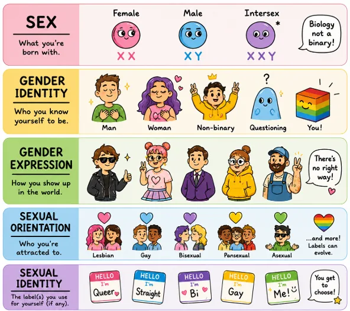
So what happened to Storm? Kathy Witterick and David Stocker continued to receive letters, criticism, and the occasional shouted insult on the sidewalk, but they held to their decision. In a 2016 follow-up interview with the Toronto Star, the family shared that Storm, who was by then 5-years-old, was using "she" pronouns and identified as a girl. Her older sibling Jazz, who had been assigned male at birth, had also begun using "she" and had taken to wearing dresses and growing her hair long. Their parents had not assigned a gender at birth; their children, on their own timelines, had each arrived at one.
In the language of this section, Storm's sex at birth had been kept private, but her gender identity — her internal sense of who she was — emerged as she grew, just as it does for any child. Her gender expression, the dresses and the chosen pronouns, was hers to figure out rather than handed to her. The Stocker-Witterick parents had not erased gender from their children's lives. They had simply refused to treat it as something adults assign and children obey. As it turned out, Storm did come to identify within the two familiar categories. Jazz, despite being assigned male at birth, did not.
The case does not prove that gender is purely social, or purely biological, or that any one approach to parenting is better than another. What it does show is that while gender and sex are complex concepts, kids can still find a way to figure them out for themselves.
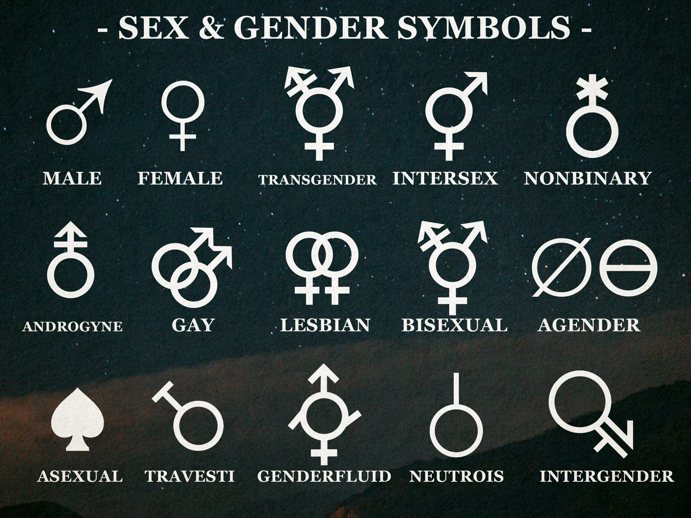
The Gender Binary and the Gender Spectrum
Western culture tends to treat sex and gender as a binarybinaryA way of thinking that divides something into exactly two opposing categories with nothing in between. Sex and gender are often treated as binary in Western culture.View in glossary →, meaning a set of only two options: male or female, man or woman, with nothing in between. This view is so familiar that it can be hard to step back and notice. Almost every form you fill out, from a driver's license application to an account on a social media app, asks you to pick one or the other. When going to the bathroom in public, you typically only have two options: Men's room or women's room. Children who sign up to play sports are usually only given two team options: the boys' team or girls' team.
A more inclusive way to think about sex and gender is as a spectrumspectrumA range of possibilities with many valid points along it, often used as an alternative to the binary view of sex and gender. The dimmer-switch image is a common illustration.View in glossary →, meaning a range of possibilities with many valid points along it. One helpful image is a dimmer switch on a lamp. A regular light switch has only two settings: on and off. A dimmer can sit anywhere on the dial, from very bright to very dim, with countless settings in between. For many people, gender works more like a dimmer than a binary switch (Diamond, 2002; Newman, 2002)ReferenceDiamond, M. (2002). Sex and gender are different: Sexual identity and gender identity are different. Clinical Child Psychology and Psychiatry, 7(3), 320–334. | Newman, L. K. (2002). Sex, gender and culture: Issues in the definition, assessment and treatment of gender identity disorder. Clinical Child Psychology and Psychiatry, 7(3), 352–359.. Plenty of people sit at the far ends of the dial. Plenty of others sit somewhere in the middle, and there is no good reason their settings are any less real or valid.
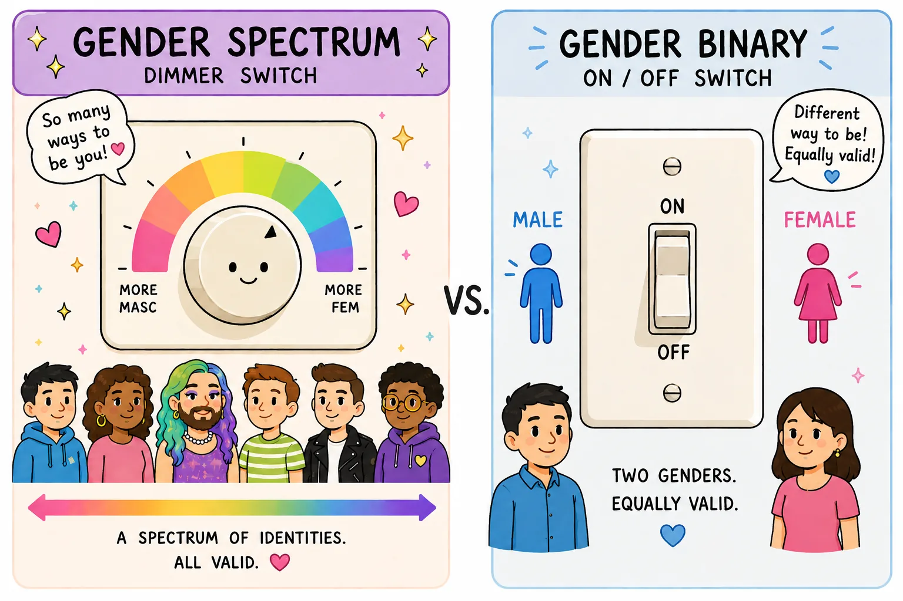
A person's internal, deeply held sense of being a man, a woman, both, or neither is best described as their —
4.2 Prenatal Sex Differentiation
Every human being starts out the same way: as a single cell. Before that cell becomes a baby that anyone would describe as male or female, it goes through a long process called prenatal sex differentiationprenatal sex differentiationThe developmental process by which a single fertilized egg becomes a body that is recognizably male, female, or somewhere in between.View in glossary →. The process is delicate, complicated, and easy to disrupt. By the time a baby is born, the result is usually (but not always) a body that looks clearly male or clearly female. But the path from a single cell to that result is anything but simple.
The Starting Point: Undifferentiated Sex
At conception, the future human consists of one fertilized egg cell. That cell contains 23 pairs of chromosomes, including one pair that determines biological sex. People who develop into typical females usually have two X chromosomes (XX). People who develop into typical males usually have one X chromosome and one Y chromosome (XY).
Although X and Y are both sex chromosomes, they are very different in size. The X chromosome carries about 1,090 genes, while the Y chromosome only carries about 80 (Federman, 2006)ReferenceFederman, D. D. (2006). The biology of human sex differences. New England Journal of Medicine, 354(14), 1507–1514.. The Y is one of the smallest chromosomes in the human body. Most of the genetic instructions for building a human come from the other 22 pairs of chromosomes and from the X. The Y mostly does just one job: nudge a developing embryo toward becoming male.

For the first six weeks after conception, you cannot tell an XX embryo and an XY embryo apart. They look identical. Both have a pair of bipotential gonadsbipotential gonadsThe early reproductive organs in an embryo, before they differentiate into either testes or ovaries. They can become either, depending on whether the SRY gene is active.View in glossary →, meaning gonads that could become either ovaries or testes. Both have two sets of internal ducts: the Müllerian ductsMüllerian ductsA pair of ducts in the early embryo that develop into the female internal reproductive tract (fallopian tubes, uterus, cervix, and upper vagina). In males, anti-Müllerian hormone causes them to disappear.View in glossary → and the Wolffian ductsWolffian ductsA pair of ducts in the early embryo that, in the presence of testosterone, develop into the male internal reproductive structures (epididymis, vas deferens, and seminal vesicles). In females, they break down and disappear.View in glossary →. And both have the same simple set of external structures: a small bump called the genital tuberclegenital tubercleA small bump of tissue in the early embryo that becomes the glans of the penis in males or the glans of the clitoris in females.View in glossary →, two urethral foldsurethral foldsTwo folds of tissue on either side of the genital tubercle in the early embryo. They fuse to form the shaft of the penis in males or remain separate as the inner labia in females.View in glossary → on either side of a slit, and two outer genital swellingsgenital swellingsTwo outer folds of tissue in the early embryo that become the scrotum in males or the outer labia in females.View in glossary →. At this point, biological sex has been determined by the chromosomes the embryo carries, but the body has not started to show it.
Fun Fact: Mom Does Not Pick the Baby's Sex
A long-standing myth says that the mother determines whether her baby is a boy or a girl. In humans, this is biologically backwards. The mother's eggs always carry an X chromosome. The father's sperm carries either an X or a Y. So it is actually the sperm, and therefore the biological father, that determines the baby's chromosomal sex.
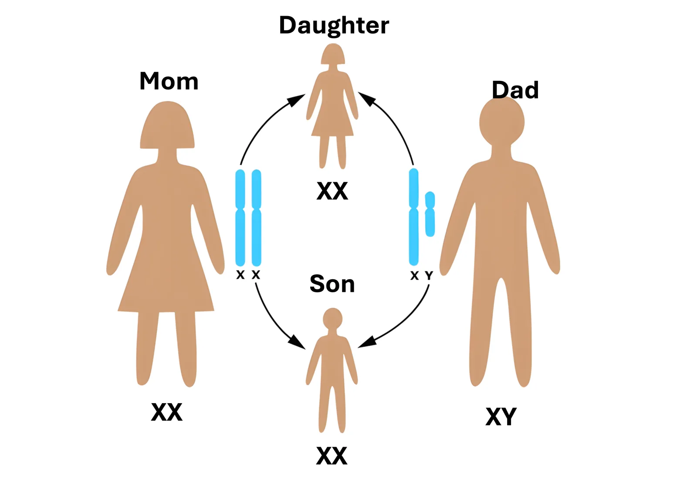
The Reproductive Tract
At about seven weeks after conception, the chromosomes start sending instructions. On the Y chromosome, a small region called the SRY geneSRY geneA small region on the Y chromosome (short for "sex-determining region of the Y") that triggers the bipotential gonads to develop into testes. Without it, they develop into ovaries by default.View in glossary → (short for "sex-determining region of the Y") begins producing a substance called testis-determining factor (Witchel, 2018; Skaletsky et al., 2003)ReferenceWitchel, S. F. (2018). Disorders of sex development. Best Practice & Research Clinical Obstetrics & Gynaecology, 48, 90–102. | Skaletsky, H., et al. (2003). The male-specific region of the human Y chromosome is a mosaic of discrete sequence classes. Nature, 423(6942), 825–837.. This signal pushes the bipotential gonads to develop into testes. In an XX embryo, there is no SRY gene, and without that signal the gonads develop into ovaries instead.
Once the testes form, they start producing two important hormones. The first is anti-Müllerian hormone (AMH)anti-Müllerian hormone (AMH)A hormone produced by the developing testes that causes the Müllerian ducts to break down and disappear, preventing development of the female internal reproductive tract.View in glossary →, which causes the Müllerian ducts to break down and disappear (Vilain, 2000)ReferenceVilain, E. (2000). Genetics of sexual development. Annual Review of Sex Research, 11(1), 1–25.. The second is testosteronetestosteroneThe principal androgen, or "male" sex hormone. It drives the development of male reproductive structures before birth and produces the deepening voice, increased muscle mass, and body hair of puberty.View in glossary →, which causes the Wolffian ducts to develop into a set of male internal structures: the epididymis, the vas deferens, and the seminal vesicles.
In an XX embryo, the opposite happens. Without AMH, the Müllerian ducts develop into the female internal reproductive tract: the fallopian tubes (also called the oviducts), the uterus, the cervix, and the upper part of the vagina. Without testosterone, the Wolffian ducts break down and disappear.
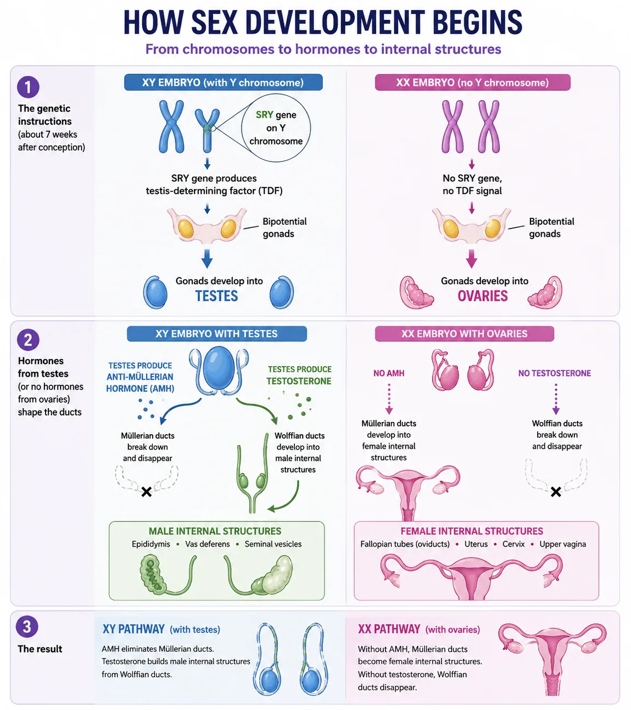
It is worth pausing on what this means. Female development is not a separate path from male development. It is the default path that happens when the male signals do not turn on. If you remove the testes from a male embryo before they start producing hormones, that embryo will develop a female body, even though it has XY chromosomes.
Developing the Genitalia
At about four weeks after conception, the external genitals of all embryos look the same: a small bump (the genital tubercle), two folds of tissue surrounding a slit, and two swellings on either side. Whether these structures become a penis and scrotum or a clitoris and labia depends on whether testosterone is present during the next several weeks (Vilain, 2000)ReferenceVilain, E. (2000). Genetics of sexual development. Annual Review of Sex Research, 11(1), 1–25..
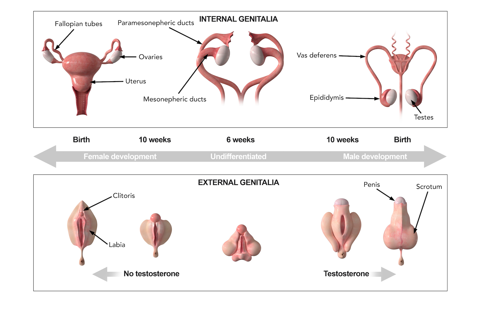
In an XY embryo, testosterone causes the genital tubercle to grow into the glans of the penisglans of the penisThe rounded head of the penis at the tip of the shaft. It develops from the same embryonic tissue (the genital tubercle) as the glans of the clitoris.View in glossary →. The urethral folds fuse together along the midline, forming the shaft of the penisshaft of the penisThe long, visible middle section of the penis between the root and the glans. It forms when the urethral folds fuse along the midline during prenatal development.View in glossary →. The genital swellings also fuse, forming the scrotumscrotumA loose sac of skin behind the penis that contains the two testes. It develops from the same embryonic tissue (the genital swellings) as the outer labia.View in glossary →. The fusion line is visible on the adult male body as a thin ridge running from the bottom of the penis to the anus.
In an XX embryo, without testosterone, the same structures develop very differently. The genital tubercle becomes the glans of the clitorisglans of the clitorisThe most sensitive, externally visible part of the clitoris. It develops from the same embryonic tissue (the genital tubercle) as the glans of the penis.View in glossary →. The urethral folds do not fuse; instead, they become the inner labiainner labiaTwo folds of soft tissue surrounding the vaginal opening, just inside the outer labia. They develop from the same embryonic tissue (the urethral folds) as the shaft of the penis.View in glossary → and form the crura, or wishbone-shaped internal portion of the clitoris. The genital swellings do not fuse; instead, they become the outer labiaouter labiaTwo larger folds of skin and tissue surrounding the inner labia and vaginal opening. They develop from the same embryonic tissue (the genital swellings) as the scrotum.View in glossary →. By twelve weeks after conception, the external genitals usually look clearly male or female, and an ultrasound can often tell you the sex of the fetus.
In all embryos, the gonads start out high in the abdominal cavity, near the kidneys. In females, the ovaries drift down slightly after birth and settle into their adult position on either side of the uterus, inside the pelvis. In males, the testes have a much longer trip to make. About seven months after conception, they begin to drop down through a passageway called the inguinal canalinguinal canalA passageway in the lower abdominal wall through which the testes descend from the abdomen to the scrotum before birth.View in glossary →, which leads from the abdomen to the scrotum. The testes pull along with them the vas deferens, the blood vessels, and the nerves they need to function. Shortly before birth, the testes settle into the scrotum, and the inguinal canal closes off.
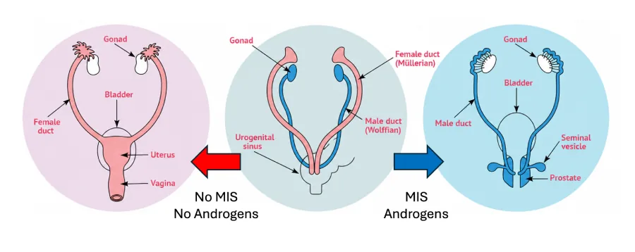
About 3 percent of male babies are born with one or both testes still in the abdomen (Schneuer et al., 2018)ReferenceSchneuer, F. J., et al. (2018). Association between male genital anomalies and adult male reproductive disorders: A population-based data linkage study spanning more than 40 years. The Lancet Child & Adolescent Health, 2(10), 736–743.. In most cases, the testes drop on their own within the first year. If they have not dropped by age one, doctors can fix the problem with a simple surgery. If the testes are left inside the abdomen long-term, the warmer temperature inside the body interferes with sperm production, and the man will be infertile.
Homologous and Analogous Organs
Looking at adult male and adult female bodies, the genitals appear to be completely different from one another, but they're actually quite similar. Every structure of the female reproductive system has a male counterpart that developed from the same starting tissue in the embryo. Organs that come from the same embryonic tissue are called homologous organshomologous organsBody parts that develop from the same embryonic tissue, even if they end up looking very different. The penis and clitoris are homologous, as are the scrotum and outer labia.View in glossary →. Organs that perform similar jobs, regardless of where they came from, are called analogous organsanalogous organsBody parts that perform similar functions despite developing from different embryonic tissue.View in glossary →.
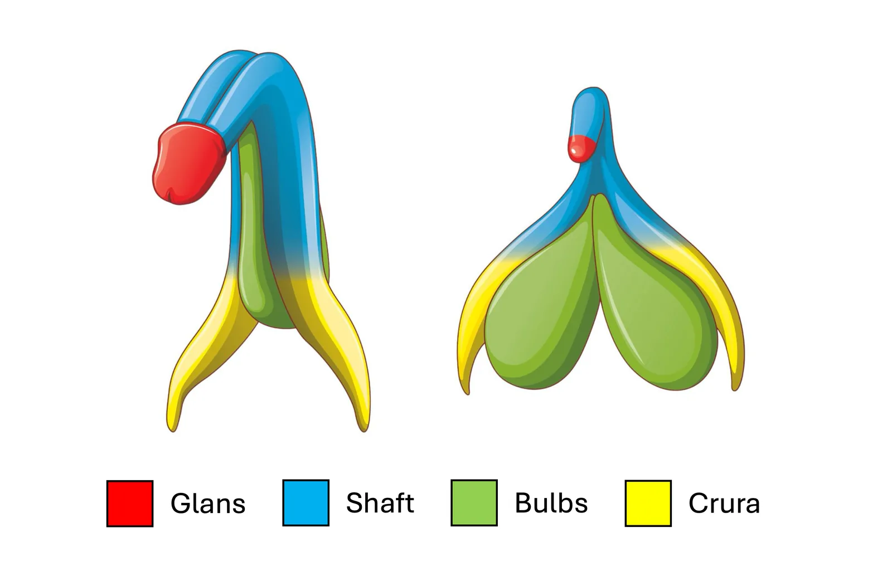
Sex Differentiation of the Brain
Sex hormones affect more than just the genitals. They also act on the developing brain. The exact timing is still being researched, but most evidence suggests that the brain begins to differentiate by sex at around four months after conception (Arnold, 2003; Fitch & Bimonte, 2002)ReferenceArnold, A. P. (2003). The gender of the voice within: The neural origin of sex differences in the brain. Current Opinion in Neurobiology, 13(6), 759–764. | Fitch, R. H., & Bimonte, H. A. (2002). Hormones, brain, and behavior: Putative biological contributions to cognitive sex differences. In The languages of the brain (pp. 55–91). Harvard University Press..
The most clearly sex-different part of the brain is the hypothalamushypothalamusA small structure at the base of the brain that helps regulate hunger, thirst, body temperature, sleep, and sexual response. Some of its regions show consistent size differences between male and female brains.View in glossary →, a small structure at the base of the brain that helps control hunger, thirst, body temperature, and many other functions. A specific region of the hypothalamus, called the sexually dimorphic nucleus (SDN)sexually dimorphic nucleus (SDN)A region of the hypothalamus that tends to be larger in male brains than in female brains.View in glossary →, is generally larger in male brains than in female brains (Swaab, Gooren, & Hofman, 1995)ReferenceSwaab, D. F., Gooren, L. J. G., & Hofman, M. A. (1995). Brain research, gender and sexual orientation. Journal of Homosexuality, 28(3–4), 283–301.. The hypothalamus is partly in charge of sexual response, such as sexual attraction, arousal and behavior. Research has found that hypothalamus development is directly related with sexual orientation and gender expression in adults, indicating that prenatal brain development has an oversized effect on people's sexual identity (LeVay, 1991; Garcia-Falgueras & Swaab, 2008)ReferenceLeVay, S. (1991). A difference in hypothalamic structure between heterosexual and homosexual men. Science, 253(5023), 1034–1037. | Garcia-Falgueras, A., & Swaab, D. F. (2008). A sex difference in the hypothalamic uncinate nucleus: Relationship to gender identity. Brain, 131(12), 3132–3146..
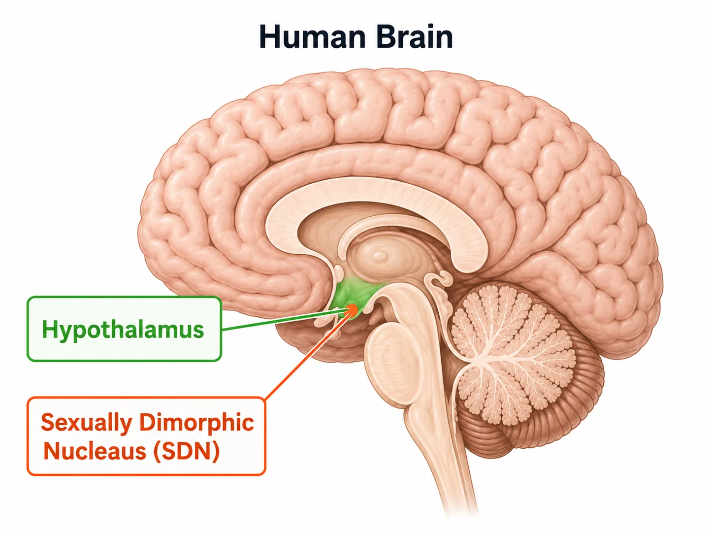
One of the most important effects of prenatal hormones on the brain is to set up the hypothalamus to either drive a monthly cycle (in females) or not (in males). In male embryos, testosterone exposure makes hypothalamic cells less responsive to estrogen later in life. In female embryos, the absence of testosterone keeps those cells highly sensitive to estrogen. That sensitivity is what allows the female brain to drive the menstrual cycle (Choi et al., 2001; McEwen, 2001)ReferenceChoi, J. K., et al. (2001). Sexual dimorphism of estrogen receptor expression in the hypothalamic preoptic area. Neuroscience Letters, 304(3), 137–140. | McEwen, B. S. (2001). Estrogens effects on the brain: Multiple sites and molecular mechanisms. Journal of Applied Physiology, 91(6), 2785–2801..
Despite some differences between female and male brains, the overlap between these is much greater than the differences. Also, brains are highly plastic, changing in response to experience. Most modern neuroscientists reject the idea that male and female brains are "hard-wired" from birth. The brain you have at age twenty is shaped by everything you have done with it (Eliot, 2009; Joel, 2011; McEwen & Milner, 2017)ReferenceEliot, L. (2009). Pink brain, blue brain. Houghton Mifflin Harcourt. | Joel, D. (2011). Male or female? Brains are intersex. Frontiers in Integrative Neuroscience, 5, 57. | McEwen, B. S., & Milner, T. A. (2017). Understanding the broad influence of sex hormones and sex differences in the brain. Journal of Neuroscience Research, 95(1–2), 24–39.. The term neurosexismneurosexismA critical term for research that exaggerates biological differences between male and female brains, often using small or weak findings to support broad claims about behavior.View in glossary → has been used to criticize researchers who jump too quickly from "we found a small difference" to "this is why men and women behave differently."
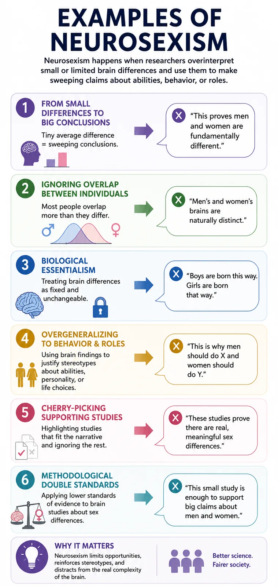
What is the role of the SRY gene on the Y chromosome during prenatal development?
The glans of the penis and the clitoris both develop from the genital tubercle. Structures that arise from the same embryonic tissue are called —
4.3 Puberty as a Second Differentiation
The first big wave of sex differentiation happens before you are born. The second happens 9–12 years later, at the start of pubertypubertyThe developmental period during which a child's body transforms into an adult body capable of sexual reproduction. It typically begins between ages 9 and 11 in girls and between ages 10 and 12 in boys.View in glossary →. This is the period during which a child's body transforms into an adult body capable of sexual reproduction. It is also a period during which many of us have personal memories of confusion, embarrassment, and self-consciousness. Puberty is, in many ways, the most awkward biological event most people will ever live through.
After birth, sex hormone levels in both boys and girls drop sharply and stay low for the next decade. The body simply does not need them yet. Sometime between ages 9 and 11 in girls, and between ages 10 and 12 in boys, the system flips back on (Tanner, 1967)ReferenceTanner, J. M. (1967). Growth at adolescence (2nd ed.). Blackwell Scientific..
Changes in Boys
The first noticeable sign of puberty in boys is the growth of the testes and scrotum, usually around ages 9 to 10. Pubic hair starts growing around the same time. About a year later, the penis begins to enlarge, first in width and then in length. By ages 13 to 14, most boys are capable of ejaculation, though the first ejaculate does not yet contain mature sperm. By around age 15, the ejaculate contains mature sperm, and the boy is biologically capable of fathering a child.
Several other changes happen at the same time. Facial hair begins to appear, usually starting with fuzz on the upper lip. The voice changes as the larynx grows, sometimes producing the embarrassing cracks and squeaks that are a comedy staple of films about middle school. A growth spurt occurs between ages 11 and 16, adding inches of height and pounds of muscle. Sweat glands and oil glands become more active, often producing acne. Erections become more frequent, sometimes at inconvenient moments, and many boys begin having nocturnal emissions, also called wet dreams. Almost all of these changes are driven by testosterone.
Changes in Girls
The first noticeable sign of puberty in girls is breast development, usually beginning around ages 9 to 10. Pubic hair appears shortly after. The hips and buttocks grow more rounded as fat is added in those areas, and the pelvic bones widen, creating a passageway large enough for a baby's head to fit through during childbirth.
The most identifiable single event of female puberty is the first menstrual period, called menarchemenarcheA girl's first menstrual period, marking the beginning of fertility. In the United States, menarche occurs on average around age 12.5.View in glossary →. In Canada, the average age of menarche is 12.7 years (Al-Sahab et al., 2010)ReferenceAl-Sahab, B., Ardern, C. I., Hamadeh, M. J., & Tamim, H. (2010). Age at menarche in Canada: Results from the National Longitudinal Survey of Children & Youth. BMC Public Health, 10, 736.. In the United States, the average is slightly younger. About 15 percent of girls have their first period before age 11.5; most have it between 11.5 and 13.9; about 17 percent have it after 13.9. There is no one "right" age.
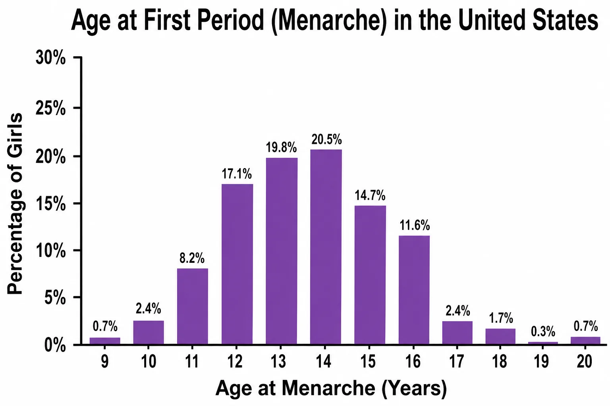
What determines when menarche happens? The leading explanation is the percent body fat hypothesispercent body fat hypothesisFrisch and McArthur's (1974) proposal that menarche cannot begin until a girl's body has stored enough fat (roughly 17 to 22 percent) to support a possible pregnancy.View in glossary →. According to this idea, menstruation cannot begin until a girl's body has stored enough fat to support a possible pregnancy (Frisch & McArthur, 1974; Lassek & Gaulin, 2007)ReferenceFrisch, R. E., & McArthur, J. W. (1974). Menstrual cycles: Fatness as a determinant of minimum weight for height necessary for their maintenance or onset. Science, 185(4155), 949–951. | Lassek, W. D., & Gaulin, S. J. C. (2007). Brief communication: Menarche is related to fat distribution. American Journal of Physical Anthropology, 133(4), 1147–1151.. This makes evolutionary sense. A girl whose body is too thin to feed a baby would not benefit from being fertile, so her body delays fertility until she is large enough. This hypothesis also helps explain why menstruation can stop in women who are extremely thin, including women with anorexia and women who train as elite distance runners. When body fat falls below about 17 to 22 percent, the system that maintains the menstrual cycle shuts down.
Fun Fact: Puberty Is Showing Up Earlier
The average age of puberty has been dropping for decades. In 1860, the average age of a girl's first period in Western countries was about 16. Today in the United States, it is about 12.5 (Posner, 2006)ReferencePosner, R. B. (2006). Early menarche: A review of research on trends in timing, racial differences, etiology and psychosocial consequences. Sex Roles, 54(5–6), 315–322..
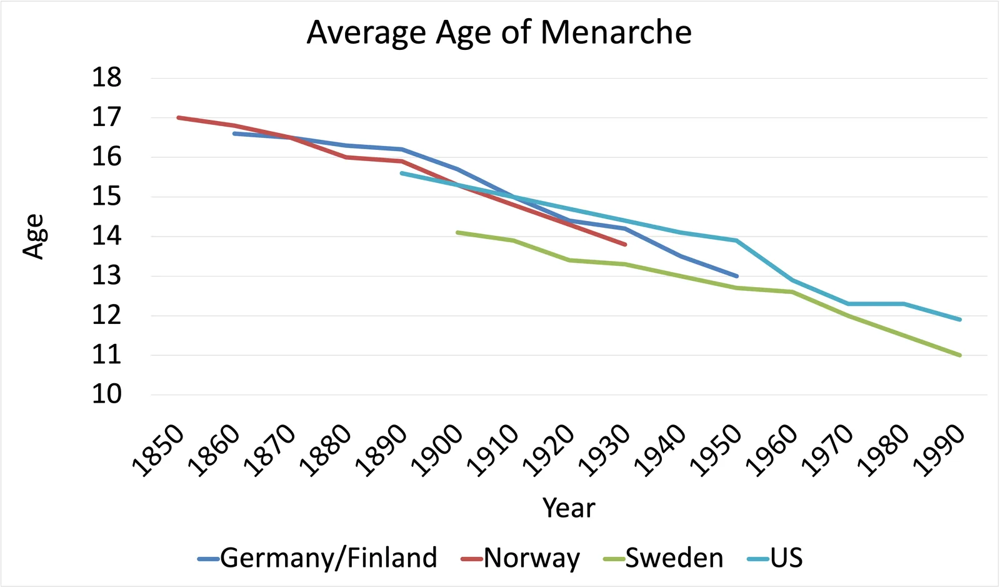
Improved nutrition explains some of this, since a critical amount of body fat is needed for puberty to begin. But two more recent factors also seem to play a role: rising rates of childhood obesity, and exposure to endocrine disruptors — chemicals in plastics, pesticides, and personal care products that mimic the effects of estrogen (Mouritsen et al., 2010; Eckert-Lind et al., 2020)ReferenceMouritsen, A., et al. (2010). Hypothesis: Exposure to endocrine-disrupting chemicals may interfere with timing of puberty. International Journal of Andrology, 33(2), 346–359. | Eckert-Lind, C., et al. (2020). Worldwide secular trends in age at pubertal onset assessed by breast development among girls. JAMA Pediatrics, 174(4), e195881.. One indicator that pollution plays a role is that girls raised in urban environments, with more exposure to toxins, tend to experience menarche earlier than girls raised in rural (cleaner) environments.
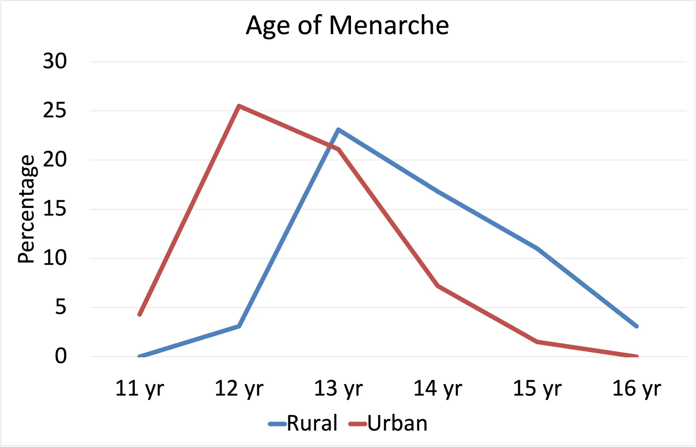
Precocious and Delayed Puberty
Not every child enters puberty at the average age. Precocious pubertyprecocious pubertyPuberty that begins unusually early, before age 8 in girls or age 9 in boys. Common contributors include childhood obesity and exposure to endocrine disruptors.View in glossary → is the medical term for puberty that begins early — generally before age 8 in girls or age 9 in boys. Delayed pubertydelayed pubertyPuberty that has not begun by about age 14, usually caused by chronic illness, malnourishment, or a hormonal imbalance. Most cases can be treated.View in glossary → is the term for puberty that has not begun by age 14.
Precocious puberty has been on the rise. The leading suspects are rising rates of childhood obesity (since fat tissue produces both estrogen and leptin) and increasing exposure to endocrine disruptors in the environment. The main risk is that an early growth spurt may end growth earlier as well, so a child who enters puberty very young may not grow as tall as they otherwise would have. Early puberty in girls has also been linked to higher rates of depression and anxiety, in part because their bodies look adult before they are emotionally prepared to deal with how the world responds.
Delayed puberty is usually caused by chronic illness, malnourishment, or a hormonal problem. In most cases it can be treated. Children with delayed puberty who are otherwise healthy often end up taller than average because they have more years to grow before their bones finish.
The percent body fat hypothesis helps explain which of the following?
4.4 Intersex Variations
So far, this chapter has described sex development as if it always goes one of two ways: XX or XY, ovaries or testes, female or male. For most people, that is roughly how it works. But sex development is a long, complicated process involving dozens of genes, multiple hormones, and several developmental windows. With that many moving parts, things sometimes go in a less typical direction. People whose bodies do not match either of the two standard developmental patterns are described as intersexintersexA person born with reproductive or sexual anatomy that does not fit the typical male or female patterns. Estimates of prevalence range from about 1 in 1,000 births to roughly 1 percent, depending on which conditions are counted.View in glossary →.
What Does Intersex Mean?
An intersex person is born with a reproductive or sexual anatomy that does not fit the usual male or female patterns. There are many specific intersex conditions. Some are caused by atypical chromosomes; others by atypical hormone responses; others by physical developmental differences with no clear cause. Some are visible at birth, while others are not discovered until puberty or even later.
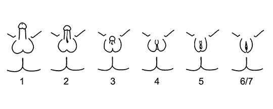
Estimates of how common intersex conditions are vary. The frequently cited figure from the Intersex Society of North America is roughly 1 in 1,000 to 1 in 2,000 births if only the most obvious conditions are counted. Researcher Anne Fausto-Sterling (Blackless et al., 2000; Fausto-Sterling, 2000)ReferenceBlackless, M., et al. (2000). How sexually dimorphic are we? Review and synthesis. American Journal of Human Biology, 12(2), 151–166. | Fausto-Sterling, A. (2000). The five sexes, revisited. The Sciences, 40(4), 18–23. estimated that if you include all conditions in which a person's body does not match the typical XX-female or XY-male pattern, the figure is closer to 1 in 100, or about 1 percent of births.
A Note on Language
Older medical writing used the word hermaphroditehermaphroditeAn older medical term for an intersex person, now considered inaccurate and offensive. The preferred terms today are intersex or Differences of Sex Development.View in glossary → to describe intersex people. That word is now considered both inaccurate and offensive. A true hermaphrodite has fully functional male and female reproductive systems, which is extremely rare in humans (but common in some animals, like snails). Modern medical writing tends to use the term Disorders of Sex Development (DSDs)Disorders of Sex Development (DSDs)A medical term for conditions in which sex development does not follow either of the two typical paths. The term has been criticized for implying intersex bodies are defective; many writers now prefer Differences of Sex Development.View in glossary →, but many activists object to the word "disorder," which implies something is broken or wrong with intersex bodies. A more neutral alternative gaining ground in recent years is Differences of Sex DevelopmentDifferences of Sex DevelopmentA neutral medical term for what used to be called Disorders of Sex Development. The shift reflects criticism of language that implies intersex bodies are broken.View in glossary →, which keeps the same abbreviation but drops the negative implication. Words matter here. Research suggests that the terminology doctors use influences both how parents feel about their intersex children and what medical decisions they make (Johnson et al., 2017)ReferenceJohnson, E. K., et al. (2017). Attitudes towards "disorders of sex development" nomenclature among affected individuals. Journal of Pediatric Urology, 13(6), 608.e1–608.e8..
Chromosomal Variations
Some intersex conditions begin with the chromosomes. During the formation of egg or sperm cells, errors sometimes occur in which sex chromosomes are distributed unevenly. The result is a person whose chromosomes are neither typical XX nor typical XY.
Klinefelter syndrome (XXY)Klinefelter syndrome (XXY)An intersex condition affecting about 1 in 1,000 male births, in which the person has one Y chromosome plus two or more X chromosomes. Common features include smaller testes, lower testosterone, less body hair, and taller-than-average height.View in glossary → affects about 1 in 1,000 male births. People with Klinefelter syndrome have a Y chromosome and therefore usually develop male bodies and male identities. They tend to have smaller testes, lower testosterone levels, less body hair, taller-than-average height, and sometimes some breast development (gynecomastia) (Pacenza et al., 2012)ReferencePacenza, N., et al. (2012). Clinical presentation of Klinefelter's syndrome: Differences according to age. International Journal of Endocrinology, 2012, 324835.. Many are infertile. Many have mild learning differences, especially in verbal areas. The condition is often not diagnosed until puberty, when the expected changes do not fully happen, or sometimes until adulthood, when a couple seeks help for infertility. Testosterone therapy started during adolescence helps the body develop in a more typically masculine pattern.
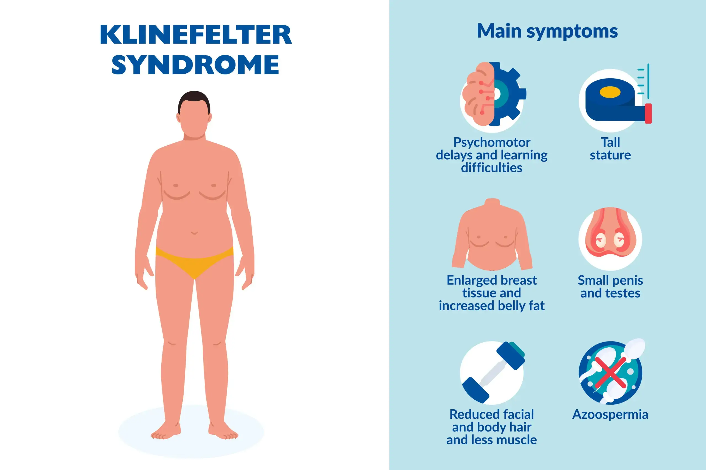
Turner syndrome (XO)Turner syndrome (XO)An intersex condition affecting about 1 in 2,000 to 2,500 female births, in which the person has only one X chromosome. Common features include short stature, a slightly webbed neck, low-set ears, and underdeveloped ovaries.View in glossary → affects about 1 in 2,000 to 2,500 female births. People with Turner syndrome have only one X chromosome and no second sex chromosome at all. They are usually identified as female at birth. Common features include short stature, a slightly webbed neck, low-set ears, and underdeveloped ovaries. Without medical intervention, most do not enter puberty on their own and are infertile. Hormone therapy started in adolescence can promote breast development, menstruation, and growth. Intelligence is unaffected.
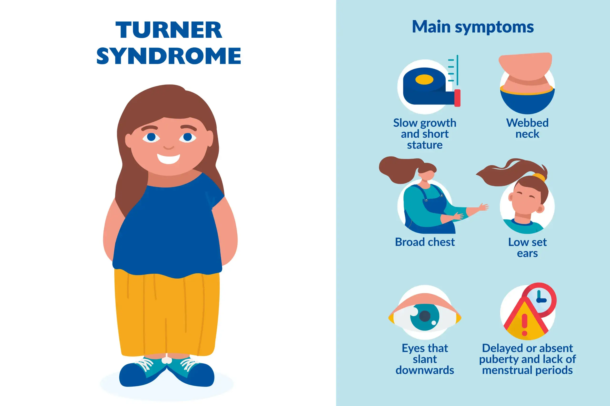
XYY syndromeXYY syndromeAn intersex condition affecting about 1 in 1,500 male births, in which the person has one X chromosome and two Y chromosomes. Most are taller than average; some have mild learning differences.View in glossary → (also known as Jacobs Syndrome) affects about 1 in 1,500 male births. Most people with XYY are taller than average; some have mild learning differences. Decades ago, XYY was associated in the press with aggression and criminality, but more careful research has shown that any link to criminal behavior is much weaker than originally believed and probably reflects learning differences rather than aggression itself (Stochholm et al., 2012)ReferenceStochholm, K., et al. (2012). Criminality in men with Klinefelter's syndrome and XYY syndrome: A cohort study. BMJ Open, 2(1), e000650.. Many men with XYY go through life without ever knowing they have it.
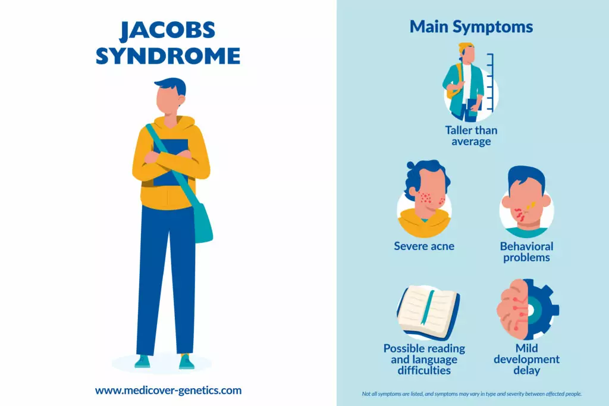
Triple X syndrome (XXX)Triple X syndrome (XXX)An intersex condition affecting about 1 in 2,000 female births, in which the person has three X chromosomes. Most women with Triple X have no obvious symptoms and never know they have the condition.View in glossary → affects about 1 in 2,000 female births. Most women with XXX have no obvious symptoms and never know about it. Some have mild learning differences. Fertility is usually slightly reduced but often normal.
Hormone-Response Variations
A second group of intersex conditions occurs in people whose chromosomes are typical (XX or XY) but whose bodies respond differently than expected to sex hormones.
Congenital Adrenal Hyperplasia (CAH)Congenital Adrenal Hyperplasia (CAH)An intersex condition in which the adrenal glands produce unusually high levels of androgens, partially masculinizing the genitals of XX fetuses. Most girls and women with CAH have a female gender identity but tend to show more stereotypically masculine interests in childhood.View in glossary → affects about 1 in 13,000 newborns. In CAH, the adrenal glands are missing an enzyme needed to produce cortisol, and as a side effect they produce unusually high levels of androgens (male-typical hormones). In an XY fetus, this often has little visible effect. In an XX fetus, the high androgen levels partially masculinize the developing genitals. A baby with CAH may be born with an enlarged clitoris, partially fused labia, or sometimes genitals that appear nearly male. Internally, the ovaries, uterus, and fallopian tubes develop typically. Most girls and women with CAH have a female gender identity and live as women, but they often have more masculinized interests and behaviors in childhood, a finding that has been important in research on the biological influence of prenatal hormones on behavior (Berenbaum, 2018)ReferenceBerenbaum, S. A. (2018). Beyond pink and blue: The complexity of early androgen effects on gender development. Child Development Perspectives, 12(1), 58–64..
Androgen Insensitivity Syndrome (AIS)Androgen Insensitivity Syndrome (AIS)An intersex condition in which an XY person produces normal testosterone but the body's cells cannot respond to it, causing the body to develop along the female pathway. AIS is usually not detected until adolescence, when the expected first period does not happen.View in glossary → affects about 1 in 13,000 XY births. In AIS, the body produces normal levels of testosterone, but the cells in the body cannot respond to it because the receptors that detect testosterone are not working. As a result, even though the fetus has XY chromosomes and produces testosterone, the body develops along the female pathway. The Wolffian ducts never develop, and the external genitals form as female. Because the testes still produce anti-Müllerian hormone, the Müllerian ducts also disappear, so the person typically has a shallow vaginal pouch but no uterus or fallopian tubes. AIS is usually not detected until adolescence, when a girl notices that she isn't having her first period as expected. The vast majority of people with AIS have a female gender identity and live as women (Wisniewski et al., 2000)ReferenceWisniewski, A. B., et al. (2000). Complete androgen insensitivity syndrome: Long-term medical, surgical, and psychosexual outcome. Journal of Clinical Endocrinology & Metabolism, 85(8), 2664–2669..
5-Alpha Reductase Deficiency (5-ARD)5-Alpha Reductase Deficiency (5-ARD)An intersex condition in which an XY person lacks the enzyme needed to convert testosterone into dihydrotestosterone (DHT), the hormone that masculinizes external genitals before birth. Babies are often born with female-appearing or ambiguous genitals; at puberty, the surge of testosterone produces more typically male changes.View in glossary → affects an unknown but small number of births. People with 5-ARD have XY chromosomes and functioning testes but lack the enzyme needed to convert testosterone into a more potent form called dihydrotestosterone (DHT). DHT is the hormone responsible for masculinizing the external genitals before birth. Without DHT, the external genitals develop in a female-typical or ambiguous form, even though the internal structures are male. Many children with 5-ARD are raised as girls until puberty. At puberty, the surge of testosterone causes their bodies to take on more typically male features: the voice deepens, the scrotum descends, the penis enlarges, and they develop muscle mass.
Fun Fact: The Third Gender of the Dominican Republic
In a small village called Las Salinas in the Dominican Republic, 5-ARD is unusually common, affecting roughly 1 in 90 people (Imperato-McGinley et al., 1974)ReferenceImperato-McGinley, J., Guerrero, L., Gautier, T., & Peterson, R. E. (1974). Steroid 5α-reductase deficiency in man: An inherited form of male pseudohermaphroditism. Science, 186(4170), 1213–1215.. Children born with the condition are recognized as a separate, accepted category called güevedoces, which translates roughly to "penis at twelve." They are raised as girls until puberty and then transition to living as boys after their bodies masculinize. The community accepts this without much fuss.
The case of the güevedoces has been important to scientists studying how biology and culture together shape gender identity, and it is one of several examples around the world of cultures that recognize more than two genders. Dr. Julianne Imperato-McGinley's 1970s research on this community revealed that people with 5-ARD tend to have small prostates, an observation that led pharmaceutical company Merck to later develop finasteride to recreate this effect. Finasteride is now widely used to prevent prostate enlargement. It also has a side benefit of preventing male-pattern baldness, making it one of the most commonly prescribed drugs for middle-aged men.
Reality Check: The Case of David Reimer
In 1966, a Canadian couple named Janet and Ron Reimer brought their identical twin sons, Bruce and Brian, in for a routine circumcision. Something went terribly wrong, and Bruce's penis was destroyed. The doctors had no way to reconstruct it.
A few months later, Janet Reimer saw a television interview with Dr. John Money, a psychologist at Johns Hopkins University who specialized in cases of unusual sex development. Money believed gender identity was almost entirely a product of how a child was raised, not biology. He thought that with surgery and hormone treatments, a child born male could be raised successfully as a girl, as long as the change happened early enough.
The Reimers consulted Dr. Money. At about 22 months of age, Bruce had his testicles removed and was renamed Brenda. From that point on, his parents raised him as a girl. He was given estrogen at puberty. Dr. Money wrote scientific papers and gave public talks about the case for years, describing it as a success and using it as evidence that gender was learned rather than biological.
The case was not a success.
Brenda hated dresses. She refused dolls. She preferred climbing trees and rough play with her brother. She was teased relentlessly by other children for her masculine mannerisms. By adolescence, she was deeply depressed and suicidal. When her parents finally told her the truth, at age 14, against Dr. Money's advice, her reaction was relief. She said, in essence, that explains everything.
She immediately changed her name to David, cut her hair, and began the process of returning to living as a man. He underwent a double mastectomy to remove the breasts that had grown from estrogen treatment. He took testosterone. He met a woman, married, and helped raise her three children. In 2004, at the age of 38, after years of depression, the death of his twin brother, and serious financial setbacks, David Reimer died by suicide.
David's story is heartbreaking. It also taught the medical community a lasting lesson: gender identity is not infinitely flexible. It is not something parents and doctors can simply assign by raising a child a certain way. Trying to force a person into a gender that does not match their identity causes lasting harm.
Current Best Practices
David Reimer was not born intersex. But for decades, his case was used to justify a standard medical approach to intersex babies that was almost identical to what happened to him: doctors would surgically modify the baby's genitals to look more clearly male or female, often within the first few weeks of life. Parents were often advised to raise the child in the assigned gender and not to discuss what had been done.
That approach is no longer considered ethical. Intersex adults who underwent these surgeries as infants have spoken out, often describing themselves as having been physically mutilated and assigned to a gender that did not match how they came to identify. Studies of long-term outcomes have shown that early surgeries often produce poor results, both physically (impaired sexual sensation, scarring, repeated surgeries) and psychologically (Creighton & Minto, 2001; Minto et al., 2003)ReferenceCreighton, S. M., & Minto, C. L. (2001). Managing intersex: Most vaginal surgery in childhood should be deferred. BMJ, 323(7324), 1264–1265. | Minto, C. L., et al. (2003). The effect of clitoral surgery on sexual outcome in individuals who have intersex conditions with ambiguous genitalia. The Lancet, 361(9365), 1252–1257..

The current recommendation, supported by the American Academy of Pediatrics and the United Nations among others, is that doctors should not perform medically unnecessary genital surgeries on intersex children too young to consent (Lee et al., 2006)ReferenceLee, P. A., Houk, C. P., Ahmed, S. F., & Hughes, I. A. (2006). Consensus statement on management of intersex disorders. Pediatrics, 118(2), e488–e500.. Parents are encouraged to assign a tentative gender at birth, or no gender at all, and to educate their child about their body as they grow. When the child develops a clear gender identity, they can decide for themselves what, if any, medical interventions they want.
The shift in approach reflects a deeper shift in thinking. Intersex people are not broken versions of male or female. They are simply another point on the spectrum of human sex development.

An XY individual with complete androgen insensitivity syndrome (AIS) most often —
What lasting lesson did the medical community take from the case of David Reimer?
4.5 Gender Differences and Similarities
If you scroll through any pop psychology section in a bookstore, you will find titles claiming that men and women come from different planets, that men want sex and women want love, that men are visual and women are emotional, that men are better at math while women are better at expressing their feelings. The list goes on. These claims sell books, but they are mostly outright wrong or heavily exaggerated.
In 2005, the psychologist Janet Hyde reviewed decades of research comparing men and women on dozens of psychological traits and abilities. Her conclusion became known as the gender similarities hypothesisgender similarities hypothesisJanet Hyde's (2005) claim, based on decades of research, that men and women are far more alike than different on most psychological traits and abilities.View in glossary →: for most psychological variables, men and women are far more alike than different (Hyde, 2005)ReferenceHyde, J. S. (2005). The gender similarities hypothesis. American Psychologist, 60(6), 581–592.. Where differences exist, they are usually small, and there is enormous overlap between the male and female distributions. If you took a random man and a random woman and tried to guess which was which based on almost any single psychological trait, you would be wrong more often than you would be right.
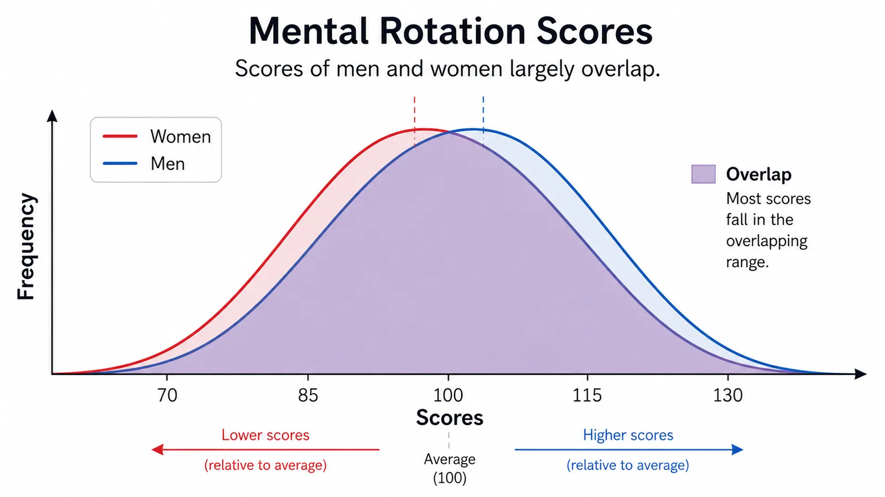
That said, some gender differences are real and meaningful. The challenge is figuring out which ones.
Where Real Differences Exist
Masturbation, Casual Sex, and Erotica
Across many studies, men report masturbating more often than women, viewing erotic material more often, and being more accepting of casual sex (Kinsey Institute, 2019; Driemeyer et al., 2017)ReferenceKinsey Institute. (2019). Diversity of sexual orientation. | Driemeyer, W., Janssen, E., Wiltfang, J., & Elmerstig, E. (2017). Masturbation experiences of Swedish senior high school students: Gender differences and similarities. The Journal of Sex Research, 54(4–5), 631–641.. Men also report starting to masturbate earlier than women.
These differences are real, but they are also smaller than they used to be. The gap has narrowed significantly since the mid-twentieth century, as cultural attitudes toward female sexuality have shifted, sex education has improved, and women have had increasing access to information and erotic content of their own (Driemeyer et al., 2017)ReferenceDriemeyer, W., Janssen, E., Wiltfang, J., & Elmerstig, E. (2017). Masturbation experiences of Swedish senior high school students: Gender differences and similarities. The Journal of Sex Research, 54(4–5), 631–641.. The fact that the differences are shrinking suggests they are not purely biological.
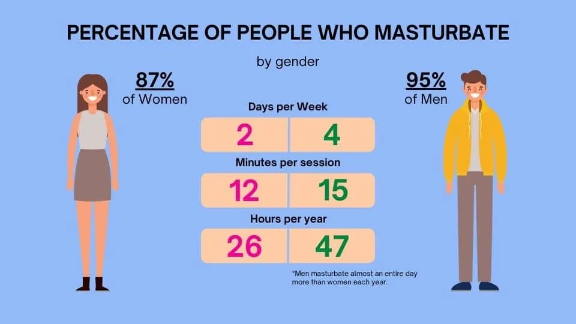
It is also worth noting that one of the most consistent findings in this area is that women report more sexual fantasy than men, even during sex itself (Huberman et al., 2015)ReferenceHuberman, J. S., Maracle, A. C., & Chivers, M. L. (2015). Gender-specificity of women's and men's self-reported attention to sexual stimuli. The Journal of Sex Research, 52(9), 983–995.. The picture of men as the more sexually desirous gender and women as more sexually passive is not supported by research.
The Sexual Double Standard
Possibly the most damaging gender difference in sexuality is not in behavior at all but in how that behavior is judged. Research consistently finds that men and women face very different social reactions for the same sexual choices (England & Bearak, 2014)ReferenceEngland, P., & Bearak, J. (2014). The sexual double standard and gender differences in attitudes toward casual sex among U.S. university students. Demographic Research, 30, 1327–1338.. A man who has many casual sexual partners is often admired. A woman who does the same thing is often shamed. The English language has dozens of insulting words for sexually active women — slut, whore, hoe — and historically very few for men. The recent appearance of words like fuckboy shows some change, but the imbalance remains.
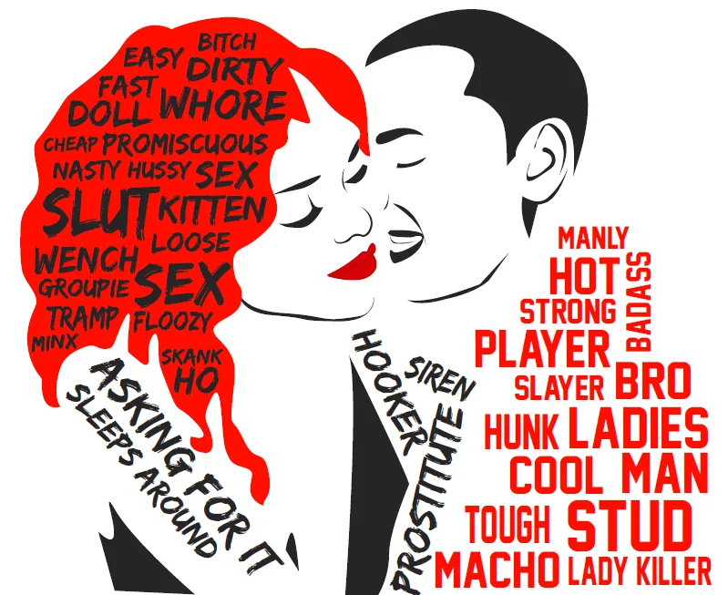
This is called the sexual double standardsexual double standardThe pattern by which men and women face different social judgments for the same sexual behavior. A man with many partners is often admired; a woman with the same number is often shamed.View in glossary →. It shapes how people behave, how they report their behavior, and how they think about themselves. Women may downplay their sexual experience to avoid judgment. Men may exaggerate theirs to gain status. Both biases muddle the data on how men and women actually differ.
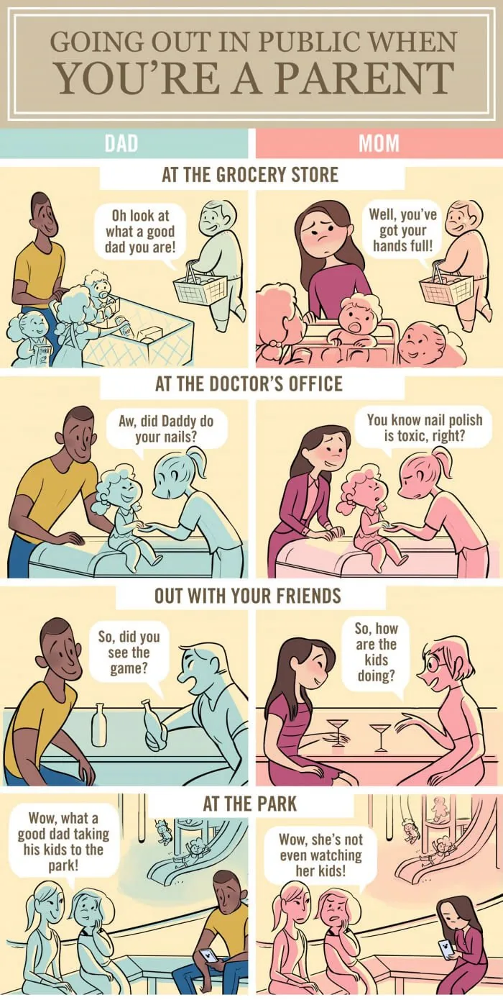
Where Differences Are Smaller Than the Stereotype Suggests
Most cognitive differences between men and women are tiny. Men score very slightly higher on some tests of mental rotation and other visuospatial tasks (Collins & Kimura, 1997)ReferenceCollins, D. W., & Kimura, D. (1997). A large sex difference on a two-dimensional mental rotation task. Behavioral Neuroscience, 111(4), 845–849.. Women score very slightly higher on some tests of verbal ability, fine motor coordination, and retrieval of information from long-term memory (Reilly et al., 2019)ReferenceReilly, D., Neumann, D. L., & Andrews, G. (2019). Gender differences in reading and writing achievement: Evidence from the National Assessment of Educational Progress (NAEP). American Psychologist, 74(4), 445–458.. Both effects are small, with much more variability within genders than between them. In practical terms, knowing someone's sex reveals almost nothing about their individual mental or verbal abilities.
The popular idea that men are better at math is not really supported by current data. The gap in math performance between boys and girls in early grades has largely closed, and in some countries girls now outperform boys (Hyde, 2005)ReferenceHyde, J. S. (2005). The gender similarities hypothesis. American Psychologist, 60(6), 581–592.. Where gaps remain, they appear to be heavily influenced by stereotype threatstereotype threatThe anxiety a person feels when they fear confirming a negative stereotype about a group they belong to. The threat itself can interfere with performance, producing the very outcome the person feared.View in glossary → — the anxiety a person feels when they fear confirming a negative stereotype about their group (Steele, 1997)ReferenceSteele, C. M. (1997). A threat in the air: How stereotypes shape intellectual identity and performance. American Psychologist, 52(6), 613–629.. Simply asking female test-takers to check a box indicating their gender before a math test has been shown to lower their scores compared to a control condition where no gender question is asked (Osborne, 2007)ReferenceOsborne, J. W. (2007). Linking stereotype threat and anxiety. Educational Psychology, 27(1), 135–154..
Differences in mood, partner numbers, and most personality traits are similarly small. Men score slightly higher on average measures of physical aggression and risk-taking. Women score slightly higher on average measures of empathy and emotional expressiveness (Kaiser et al., 2020)ReferenceKaiser, T., Del Giudice, M., & Booth, T. (2020). Global sex differences in personality: Replication with an open online dataset. Journal of Personality, 88(3), 415–429.. But again, the overlap between genders is much larger than differences between them.
Reporting Biases
One of the trickiest problems in studying gender differences is that people lie. Not maliciously, usually — but in subtle ways that bring their answers more in line with what they think they should say.
A clever study by Alexander and Fisher (2003)ReferenceAlexander, M. G., & Fisher, T. D. (2003). Truth and consequences: Using the bogus pipeline to examine sex differences in self-reported sexuality. The Journal of Sex Research, 40(1), 27–35. asked young men and women to report their sexual attitudes and behaviors under three conditions. In the first, participants believed their answers were completely anonymous. In the second, they felt their answers might be seen by the experimenter. In the third — the bogus pipelinebogus pipelineA research technique in which participants are told they are connected to a lie detector, even though the device is fake. The belief that lies may be caught leads to more honest reporting.View in glossary → condition — they were hooked up to a machine they believed was a lie detector (which was fake). When they thought they could lie freely, men and women reported very different numbers of sexual partners and very different attitudes. When they thought a lie detector would catch them, those differences shrank considerably.
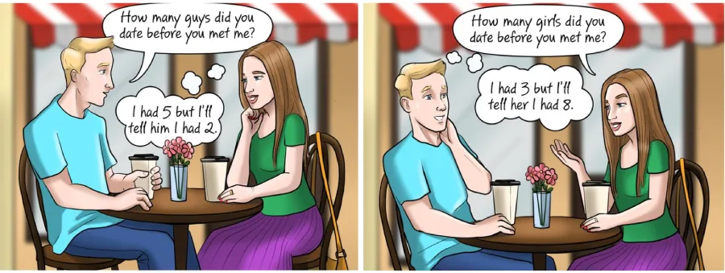
This finding is important. It suggests that some of the gender differences we see in research are real, but some are just people performing the role they think they are supposed to play. Whenever you read a study claiming a big gender difference in sexual behavior, it is worth asking how the data were collected.
Janet Hyde's gender similarities hypothesis, supported by her 2005 review of the research, holds that —
In Alexander and Fisher's bogus pipeline study, women who believed they were hooked up to a working lie detector reported —
4.6 Where Do Gender Differences Come From?
If men and women differ in some ways — and they do, even if not as much as stereotypes suggest — where do those differences come from? Theorists have offered several explanations. None is fully correct on its own. The most useful way to think about this is that biological, psychological, and cultural forces are all working at the same time, and the truth involves some of each.
The Biological Perspective
The biological perspective argues that some gender differences are rooted in body chemistry — particularly prenatal hormones — and would exist even without any social input.
One key piece of evidence comes from girls with CAH, who as you read earlier are exposed to unusually high levels of androgens before birth. These girls are more likely to prefer stereotypically "boy" toys, more likely to engage in rough-and-tumble play, and as adults more likely to choose traditionally male-dominated careers and hobbies (Berenbaum & Hines, 1992)ReferenceBerenbaum, S. A., & Hines, M. (1992). Early androgens are related to childhood sex-typed toy preferences. Psychological Science, 3(3), 203–206.. This is hard to explain through socialization alone, since CAH girls are usually raised the same way as other girls.
A second piece of evidence comes from studies of typical pregnancies in which researchers measured the amount of testosterone in the amniotic fluid surrounding the developing fetus. Higher prenatal testosterone correlated with stronger preference for stereotypically masculine toys after birth, regardless of the child's chromosomal sex (Auyeung et al., 2009; van de Beek et al., 2009)ReferenceAuyeung, B., et al. (2009). Fetal testosterone predicts sexually differentiated childhood behavior in girls and in boys. Psychological Science, 20(2), 144–148. | van de Beek, C., et al. (2009). Prenatal sex hormones (maternal and amniotic fluid) and gender-related play behavior in 13-month-old infants. Archives of Sexual Behavior, 38(1), 6–15..
A third, and stranger, line of evidence involves the 2D:4D digit ratio2D:4D digit ratioThe ratio of the index (second) finger to the ring (fourth) finger, set before birth and influenced by prenatal testosterone exposure. On average, men have lower 2D:4D ratios than women.View in glossary → — the ratio of the length of your index finger to the length of your ring finger. The ratio is laid down before birth and is influenced by prenatal testosterone exposure. People exposed to more prenatal testosterone tend to have a lower ratio, meaning their index and ring fingers are more similar in length. On average, men have lower 2D:4D ratios than women, but the ratio varies a lot within each sex. Studies have linked lower 2D:4D ratios to slightly more stereotypically masculine behaviors, including higher aggression (Brown et al., 2002)ReferenceBrown, W. M., Hines, M., Fane, B. A., & Breedlove, S. M. (2002). Masculinized finger length patterns in human males and females with congenital adrenal hyperplasia. Hormones and Behavior, 42(4), 380–386.. It is not a perfect measure, but it is one of the only ways researchers have to look back at a person's prenatal hormone exposure long after the fact.
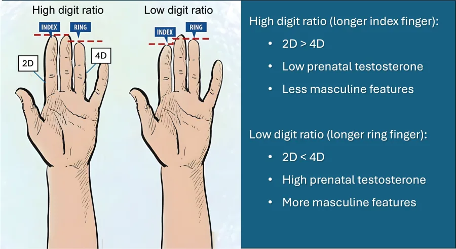
Evolutionary Psychology
The evolutionary psychology perspective argues that male and female bodies and minds were shaped by millions of years of different reproductive challenges, and that some gender differences are leftover adaptations to those challenges.
The most famous statement of this view comes from David Buss (1989)ReferenceBuss, D. M. (1989). Sex differences in human mate preferences: Evolutionary hypotheses tested in 37 cultures. Behavioral and Brain Sciences, 12(1), 1–14., who surveyed more than 10,000 people in 37 cultures. He found consistent cross-cultural patterns in what men and women look for in a partner. Men, on average, tended to place more emphasis on youth and physical attractiveness — traits associated with fertility. Women, on average, tended to place more emphasis on financial stability and social status — traits associated with the ability to provide for children. Men were also more likely to feel jealous about a partner's sexual infidelity; women were more likely to feel jealous about a partner's emotional infidelity.
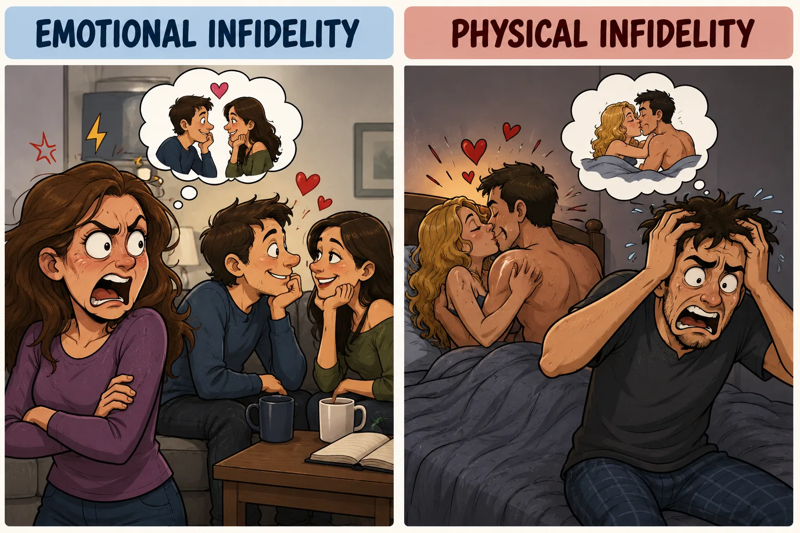
Evolutionary psychologists explain these patterns through parental investment theoryparental investment theoryAn evolutionary theory (Trivers, 1972) proposing that the sex which invests more biological resources in offspring should be choosier about mates, while the sex which invests less should be more open to short-term mating.View in glossary → (Trivers, 1972)ReferenceTrivers, R. L. (1972). Parental investment and sexual selection. In B. Campbell (Ed.), Sexual selection and the descent of man, 1871–1971 (pp. 136–179). Aldine.. A female mammal commits an enormous amount of biological investment to each pregnancy: nine months of carrying the fetus, the risks of childbirth, years of nursing. A male mammal's minimum biological investment is much smaller. The theory predicts that, on average, females should be choosier about partners and males should be more open to short-term mating opportunities, because the cost of a "bad" partner is much higher for the female.
Critics of evolutionary psychology argue that the theory is too simple and too easy to use to justify whatever pattern happens to be observed in the modern world (Geertz, 1973)ReferenceGeertz, C. (1973). The interpretation of cultures: Selected essays. Basic Books.. They point out that genes code for proteins, not for complex behaviors like "fall in love with high-status partners." Many of the patterns Buss documented can also be explained by the simple fact that, in most societies he studied, women had less access to resources of their own, and so they naturally placed more emphasis on a partner's ability to provide them.
Fun Fact: Vervet Monkeys and Their Toys
In a now-famous study, researchers gave a group of vervet monkeys a selection of toys typically marketed to children: trucks, dolls, books, and stuffed animals. The male monkeys spent more time with the trucks. The female monkeys spent more time with the dolls. Neither group had ever been to a toy store or seen a toy commercial.
This does not mean that human toy preferences are purely biological, since the human social environment is much more powerful than anything a monkey experiences. But it is one piece of evidence that prenatal hormones may shape preferences before culture has a chance to weigh in.
The Cognitive Perspective
Children do not just passively absorb messages about gender. They actively build their own understanding of what gender means and use it to interpret the world.
Drawing on the work of Jean Piaget (1951)ReferencePiaget, J. (1951). Play, dreams and imitation in childhood. Routledge., psychologists studying gender development have identified rough stages children pass through. At birth, a child has no concept of gender. Between ages two and five, most children develop a strong, often rigid sense of gender categories: "boys have penises and girls have vaginas; boys play with trucks and girls play with dolls." A child this age may insist that a man with long hair is really a woman, or that a girl wearing pants is really a boy.
As children's brains mature, they become capable of more flexible thinking. Many children come to understand that gender is more nuanced — that the rules are mostly arbitrary, that a girl can like trucks without being a boy, and that not everything has to fit in a box. Other children continue to hold rigid views, often because the pressure to fit in at school reinforces them.
Psychologist Sandra Bem (1981)ReferenceBem, S. L. (1981). Gender schema theory: A cognitive account of sex typing. Psychological Review, 88(4), 354–364. extended this idea with gender schema theorygender schema theorySandra Bem's (1981) theory that children build a mental framework about what counts as masculine and feminine, then use that framework to interpret new experiences.View in glossary →. A schema is a mental framework that organizes information about a category. According to Bem, children build a gender schema — a personal map of what they associate with masculinity and femininity — and they use it to make sense of new experiences. If a child's gender schema says that "real boys do not cry," that child will interpret a boy crying as a failure, a weakness, or a sign that something is wrong. The schema shapes the world the child sees.
Gender schemas also influence sexual scriptssexual scriptsUnwritten cultural rules about how sexual interactions are supposed to unfold — who initiates, who responds, how desire is expressed, and what counts as "normal" sex.View in glossary →, the unwritten rules people learn about how sexual interactions are "supposed" to go (Simon & Gagnon, 1986)ReferenceSimon, W., & Gagnon, J. H. (1986). Sexual scripts: Permanence and change. Archives of Sexual Behavior, 15(2), 97–120.. A young man may absorb a script that says he is supposed to initiate, pursue, and never appear hesitant. A young woman may absorb a script that says she is supposed to be sought after, be a little reluctant, and avoid appearing too eager. These scripts have real consequences for how people experience and communicate about sex.
Putting It All Together
So which theory is right? In some sense, all of them. Sex hormones really do affect the developing brain. Evolutionary pressures really did shape some aspects of human mating psychology. Children really do learn from rewards, punishments, and imitation. And children really do build mental schemas that influence how they interpret the world.
The mistake is to treat any one of these theories as the whole story. Gender differences are not purely biological. They are not purely cultural. They are the product of biology and culture interacting from the moment of conception forward. The best researchers in the field do not pick a single perspective and stick with it; they look at the question in front of them and ask which factors are most likely to be doing the work.
That, in the end, is the most useful idea this chapter can give you. The next time someone tells you that "men are just like that" or "women are just like that," whatever the topic, you now have the tools to ask better questions. Is the difference real, or just stereotype? If it is real, how big is it? Where might it come from? And, perhaps most importantly, what would change if the circumstances of people's lives changed?
According to parental investment theory, women tend to be choosier than men about mates mainly because —
In Sandra Bem's gender schema theory, a gender schema is best described as —
Study Guide
After reading Chapter 4, you should be able to answer each of the questions below. Use your own words where possible, and support your answers with examples or evidence from the text.
4.1 Understanding Sex and Gender
- Define and distinguish among the following five terms: sex, gender identity, gender expression, sexual orientation, and sexual identity. Why is it important to treat these as separate concepts rather than using them interchangeably?
- What is the difference between viewing gender as a binary versus viewing it as a spectrum? Use the chapter's dimmer switch analogy to explain what the spectrum model means, and describe why this framing is considered more inclusive.
4.2 Prenatal Sex Differentiation
- Describe the starting point of prenatal sex differentiation. What are bipotential gonads, and what are the Müllerian and Wolffian ducts? Why do XX and XY embryos look identical for the first six weeks after conception?
- What is the SRY gene, and what does it do? Trace how the presence or absence of the SRY gene leads to two different developmental outcomes for the gonads, the internal reproductive ducts, and ultimately the external genitals.
- Explain the roles of anti-Müllerian hormone (AMH) and testosterone in the development of the male reproductive tract. What happens to each set of ducts — Müllerian and Wolffian — in a typical XY embryo, and what happens to them in a typical XX embryo?
- Describe how the same embryonic structures — the genital tubercle, urethral folds, and genital swellings — develop differently depending on whether testosterone is present. What does each structure become in a male body, and what does it become in a female body?
- What is the sexually dimorphic nucleus (SDN) of the hypothalamus, and how does prenatal hormone exposure affect its development? What does the chapter say about the limits of interpreting male-female brain differences, and what does the term "neurosexism" refer to?
4.3 Puberty as a Second Differentiation
- Describe the sequence of physical changes that occur during male puberty, including the order in which they typically appear and the approximate ages at which they begin. What hormone drives most of these changes?
- Describe the sequence of physical changes that occur during female puberty, including menarche. What is the percent body fat hypothesis, and how does it explain both the timing of menarche and why menstruation can stop in women who are extremely thin?
- The average age of puberty has been declining for decades. What explanations does the chapter offer for this trend? Define precocious puberty and delayed puberty, and describe the main risks and causes associated with each.
4.4 Intersex Variations
- What does it mean to be intersex? How common is it, and why do estimates of prevalence vary so widely depending on how the term is defined? Why has the term "hermaphrodite" been replaced, and what debate exists around the terms "Disorders" versus "Differences" of Sex Development?
- Describe Klinefelter syndrome (XXY) and Turner syndrome (XO): what chromosome pattern causes each, what are the typical physical characteristics, and how is each usually treated? At what point in life is each condition often first detected, and why?
- Explain Congenital Adrenal Hyperplasia (CAH). What causes it, how does it affect fetal development differently in XX versus XY embryos, and what does research on CAH girls suggest about the role of prenatal hormones in shaping behavior and interests?
- Explain Androgen Insensitivity Syndrome (AIS). What is the underlying mechanism, how does it affect physical development in an XY fetus, and what does the chapter say about gender identity in people with AIS? Why is AIS typically not detected until adolescence?
- What is 5-Alpha Reductase Deficiency (5-ARD), and what happens physically at puberty for someone with this condition? Describe the güevedoces of the Dominican Republic and explain why this community has been significant to researchers studying the relationship between biology and gender identity.
- Summarize the case of David Reimer. What happened to him, what did Dr. John Money believe, and how did the outcome of the case challenge that belief? What lasting lesson did the medical community take from David's story, and how did it change the standard approach to intersex infants?
4.5 Gender Differences and Similarities
- What is Janet Hyde's gender similarities hypothesis, and what did her 2005 review of the research find? What does the chapter say about the real gender differences in masturbation, casual sex, and sexual fantasy — including the direction and size of those differences and how they have changed over time?
- Describe the sexual double standard: what it is, how it operates in language and social judgment, and how it affects the way men and women report their sexual behavior. What did the Alexander and Fisher bogus pipeline study demonstrate about gender differences in self-reported sexuality?
- What does the research actually show about gender differences in cognitive abilities, including math and spatial reasoning? What is stereotype threat, and how does it help explain gaps in measured performance between men and women?
4.6 Where Do Gender Differences Come From?
- Describe the biological perspective on the origins of gender differences. What three lines of evidence does the chapter present — including research on CAH girls, prenatal testosterone in amniotic fluid, and the 2D:4D digit ratio — and what does each suggest about the role of prenatal hormones?
- Explain the evolutionary psychology perspective on gender differences, including David Buss's cross-cultural findings and parental investment theory. What specific patterns did Buss find in mate preferences and jealousy across cultures, and what are the main criticisms of the evolutionary explanation?
- Describe the social learning perspective on gender differences. What mechanisms does it rely on, and how does it explain why gender norms vary across cultures and change over time? Give an example from the chapter that illustrates the cultural rather than biological nature of a gender norm.
- Explain gender schema theory as proposed by Sandra Bem. What is a schema, how do children develop a gender schema, and how does that schema shape their interpretation of the world? How does the concept of sexual scripts connect to gender schemas, and what consequences do sexual scripts have for how people experience sex?
Key Terms
- 2D:4D digit ratio
- The ratio of the index (second) finger to the ring (fourth) finger, set before birth and influenced by prenatal testosterone exposure. On average, men have lower 2D:4D ratios than women.
- 5-Alpha Reductase Deficiency (5-ARD)
- An intersex condition in which an XY person lacks the enzyme needed to convert testosterone into dihydrotestosterone (DHT), the hormone that masculinizes external genitals before birth. Babies are often born with female-appearing or ambiguous genitals; at puberty, the surge of testosterone produces more typically male changes.
- Analogous organs
- Body parts that perform similar functions despite developing from different embryonic tissue.
- Androgen Insensitivity Syndrome (AIS)
- An intersex condition in which an XY person produces normal testosterone but the body's cells cannot respond to it, causing the body to develop along the female pathway. AIS is usually not detected until adolescence, when the expected first period does not happen.
- Anti-Müllerian hormone (AMH)
- A hormone produced by the developing testes that causes the Müllerian ducts to break down and disappear, preventing development of the female internal reproductive tract.
- Binary
- A way of thinking that divides something into exactly two opposing categories with nothing in between. Sex and gender are often treated as binary in Western culture.
- Bipotential gonads
- The early reproductive organs in an embryo, before they differentiate into either testes or ovaries. They can become either, depending on whether the SRY gene is active.
- Bogus pipeline
- A research technique in which participants are told they are connected to a lie detector, even though the device is fake. The belief that lies may be caught leads to more honest reporting.
- Congenital Adrenal Hyperplasia (CAH)
- An intersex condition in which the adrenal glands produce unusually high levels of androgens, partially masculinizing the genitals of XX fetuses. Most girls and women with CAH have a female gender identity but tend to show more stereotypically masculine interests in childhood.
- Delayed puberty
- Puberty that has not begun by about age 14, usually caused by chronic illness, malnourishment, or a hormonal imbalance. Most cases can be treated.
- Differences of Sex Development
- A neutral medical term for what used to be called Disorders of Sex Development. The shift reflects criticism of language that implies intersex bodies are broken.
- Disorders of Sex Development (DSDs)
- A medical term for conditions in which sex development does not follow either of the two typical paths. The term has been criticized for implying intersex bodies are defective; many writers now prefer Differences of Sex Development.
- Gender expression
- How a person displays their gender to the world through clothing, hairstyle, voice, mannerisms, name, and pronouns.
- Gender identity
- A person's internal sense of being a man, a woman, both, or neither. It is psychological rather than biological and usually, but not always, matches the sex assigned at birth.
- Gender schema theory
- Sandra Bem's (1981) theory that children build a mental framework about what counts as masculine and feminine, then use that framework to interpret new experiences.
- Gender similarities hypothesis
- Janet Hyde's (2005) claim, based on decades of research, that men and women are far more alike than different on most psychological traits and abilities.
- Genital swellings
- Two outer folds of tissue in the early embryo that become the scrotum in males or the outer labia in females.
- Genital tubercle
- A small bump of tissue in the early embryo that becomes the glans of the penis in males or the glans of the clitoris in females.
- Glans of the clitoris
- The most sensitive, externally visible part of the clitoris. It develops from the same embryonic tissue (the genital tubercle) as the glans of the penis.
- Glans of the penis
- The rounded head of the penis at the tip of the shaft. It develops from the same embryonic tissue (the genital tubercle) as the glans of the clitoris.
- Hermaphrodite
- An older medical term for an intersex person, now considered inaccurate and offensive. The preferred terms today are intersex or Differences of Sex Development.
- Homologous organs
- Body parts that develop from the same embryonic tissue, even if they end up looking very different. The penis and clitoris are homologous, as are the scrotum and outer labia.
- Hypothalamus
- A small structure at the base of the brain that helps regulate hunger, thirst, body temperature, sleep, and sexual response. Some of its regions show consistent size differences between male and female brains.
- Inguinal canal
- A passageway in the lower abdominal wall through which the testes descend from the abdomen to the scrotum before birth.
- Inner labia
- Two folds of soft tissue surrounding the vaginal opening, just inside the outer labia. They develop from the same embryonic tissue (the urethral folds) as the shaft of the penis.
- Intersex
- A person born with reproductive or sexual anatomy that does not fit the typical male or female patterns. Estimates of prevalence range from about 1 in 1,000 births to roughly 1 percent, depending on which conditions are counted.
- Klinefelter syndrome (XXY)
- An intersex condition affecting about 1 in 1,000 male births, in which the person has one Y chromosome plus two or more X chromosomes. Common features include smaller testes, lower testosterone, less body hair, and taller-than-average height.
- Menarche
- A girl's first menstrual period, marking the beginning of fertility. In the United States, menarche occurs on average around age 12.5.
- Müllerian ducts
- A pair of ducts in the early embryo that develop into the female internal reproductive tract (fallopian tubes, uterus, cervix, and upper vagina). In males, anti-Müllerian hormone causes them to disappear.
- Neurosexism
- A critical term for research that exaggerates biological differences between male and female brains, often using small or weak findings to support broad claims about behavior.
- Outer labia
- Two larger folds of skin and tissue surrounding the inner labia and vaginal opening. They develop from the same embryonic tissue (the genital swellings) as the scrotum.
- Parental investment theory
- An evolutionary theory (Trivers, 1972) proposing that the sex which invests more biological resources in offspring should be choosier about mates, while the sex which invests less should be more open to short-term mating.
- Percent body fat hypothesis
- Frisch and McArthur's (1974) proposal that menarche cannot begin until a girl's body has stored enough fat (roughly 17 to 22 percent) to support a possible pregnancy.
- Precocious puberty
- Puberty that begins unusually early, before age 8 in girls or age 9 in boys. Common contributors include childhood obesity and exposure to endocrine disruptors.
- Prenatal sex differentiation
- The developmental process by which a single fertilized egg becomes a body that is recognizably male, female, or somewhere in between.
- Puberty
- The developmental period during which a child's body transforms into an adult body capable of sexual reproduction. It typically begins between ages 9 and 11 in girls and between ages 10 and 12 in boys.
- Scrotum
- A loose sac of skin behind the penis that contains the two testes. It develops from the same embryonic tissue (the genital swellings) as the outer labia.
- Sex
- The biological category of male or female, assigned at birth based on observable physical features. It is determined by chromosomes, prenatal hormones, and anatomy, but does not always fit cleanly into the two standard categories.
- Sexual double standard
- The pattern by which men and women face different social judgments for the same sexual behavior. A man with many partners is often admired; a woman with the same number is often shamed.
- Sexual identity
- The broadest of the gender-related terms, referring to the whole package of how a person understands themselves as a sexual being. It includes gender identity, gender expression, sexual orientation, body image, and unique sexual interests.
- Sexual orientation
- Which gender or genders a person is romantically and physically attracted to. It is independent of gender identity and gender expression.
- Sexual scripts
- Unwritten cultural rules about how sexual interactions are supposed to unfold—who initiates, who responds, how desire is expressed, and what counts as "normal" sex.
- Sexually dimorphic nucleus (SDN)
- A region of the hypothalamus that tends to be larger in male brains than in female brains.
- Shaft of the penis
- The long, visible middle section of the penis between the root and the glans. It forms when the urethral folds fuse along the midline during prenatal development.
- A theory associated with Albert Bandura that most gender differences are learned through reward, punishment, and imitation rather than being built in from birth.
- Spectrum
- A range of possibilities with many valid points along it, often used as an alternative to the binary view of sex and gender. The dimmer-switch image is a common illustration.
- SRY gene
- A small region on the Y chromosome (short for "sex-determining region of the Y") that triggers the bipotential gonads to develop into testes. Without it, they develop into ovaries by default.
- Stereotype threat
- The anxiety a person feels when they fear confirming a negative stereotype about a group they belong to. The threat itself can interfere with performance, producing the very outcome the person feared.
- Testosterone
- The principal androgen, or "male" sex hormone. It drives the development of male reproductive structures before birth and produces the deepening voice, increased muscle mass, and body hair of puberty.
- Triple X syndrome (XXX)
- An intersex condition affecting about 1 in 2,000 female births, in which the person has three X chromosomes. Most women with Triple X have no obvious symptoms and never know they have the condition.
- Turner syndrome (XO)
- An intersex condition affecting about 1 in 2,000 to 2,500 female births, in which the person has only one X chromosome. Common features include short stature, a slightly webbed neck, low-set ears, and underdeveloped ovaries.
- Urethral folds
- Two folds of tissue on either side of the genital tubercle in the early embryo. They fuse to form the shaft of the penis in males or remain separate as the inner labia in females.
- Wolffian ducts
- A pair of ducts in the early embryo that, in the presence of testosterone, develop into the male internal reproductive structures (epididymis, vas deferens, and seminal vesicles). In females, they break down and disappear.
- XYY syndrome
- An intersex condition affecting about 1 in 1,500 male births, in which the person has one X chromosome and two Y chromosomes. Most are taller than average; some have mild learning differences.
References
- Alexander, M. G., & Fisher, T. D. (2003). Truth and consequences: Using the bogus pipeline to examine sex differences in self-reported sexuality. The Journal of Sex Research, 40(1), 27–35. https://doi.org/10.1080/00224490309552164
- Al-Sahab, B., Ardern, C. I., Hamadeh, M. J., & Tamim, H. (2010). Age at menarche in Canada: Results from the National Longitudinal Survey of Children & Youth. BMC Public Health, 10, 736. https://doi.org/10.1186/1471-2458-10-736
- Arnold, A. P. (2003). The gender of the voice within: The neural origin of sex differences in the brain. Current Opinion in Neurobiology, 13(6), 759–764. https://doi.org/10.1016/j.conb.2003.10.006
- Auyeung, B., Baron-Cohen, S., Ashwin, E., Knickmeyer, R., Taylor, K., Hackett, G., & Hines, M. (2009). Fetal testosterone predicts sexually differentiated childhood behavior in girls and in boys. Psychological Science, 20(2), 144–148. https://doi.org/10.1111/j.1467-9280.2009.02279.x
- Bandura, A. (1971). Social learning theory. General Learning Press.
- Bem, S. L. (1981). Gender schema theory: A cognitive account of sex typing. Psychological Review, 88(4), 354–364. https://doi.org/10.1037/0033-295X.88.4.354
- Berenbaum, S. A. (2018). Beyond pink and blue: The complexity of early androgen effects on gender development. Child Development Perspectives, 12(1), 58–64. https://doi.org/10.1111/cdep.12261
- Berenbaum, S. A., & Hines, M. (1992). Early androgens are related to childhood sex-typed toy preferences. Psychological Science, 3(3), 203–206. https://doi.org/10.1111/j.1467-9280.1992.tb00028.x
- Blackless, M., Charuvastra, A., Derryck, A., Fausto-Sterling, A., Lauzanne, K., & Lee, E. (2000). How sexually dimorphic are we? Review and synthesis. American Journal of Human Biology, 12(2), 151–166. https://doi.org/10.1002/(SICI)1520-6300(200003/04)12:2<151::AID-AJHB1>3.0.CO;2-F
- Brown, W. M., Hines, M., Fane, B. A., & Breedlove, S. M. (2002). Masculinized finger length patterns in human males and females with congenital adrenal hyperplasia. Hormones and Behavior, 42(4), 380–386. https://doi.org/10.1006/hbeh.2002.1830
- Buss, D. M. (1989). Sex differences in human mate preferences: Evolutionary hypotheses tested in 37 cultures. Behavioral and Brain Sciences, 12(1), 1–14. https://doi.org/10.1017/S0140525X00023992
- Choi, J. K., Park, S. Y., Kim, K. J., Park, S. R., Kim, S. H., Kim, Y. K., & Lee, S. H. (2001). Sexual dimorphism of estrogen receptor expression in the hypothalamic preoptic area. Neuroscience Letters, 304(3), 137–140.
- Collins, D. W., & Kimura, D. (1997). A large sex difference on a two-dimensional mental rotation task. Behavioral Neuroscience, 111(4), 845–849. https://doi.org/10.1037/0735-7044.111.4.845
- Creighton, S. M., & Minto, C. L. (2001). Managing intersex: Most vaginal surgery in childhood should be deferred. BMJ, 323(7324), 1264–1265. https://doi.org/10.1136/bmj.323.7324.1264
- Diamond, M. (2002). Sex and gender are different: Sexual identity and gender identity are different. Clinical Child Psychology and Psychiatry, 7(3), 320–334. https://doi.org/10.1177/1359104502007003002
- Driemeyer, W., Janssen, E., Wiltfang, J., & Elmerstig, E. (2017). Masturbation experiences of Swedish senior high school students: Gender differences and similarities. The Journal of Sex Research, 54(4–5), 631–641. https://doi.org/10.1080/00224499.2016.1167814
- Eckert-Lind, C., Busch, A. S., Petersen, J. H., Sørensen, K., Aksglaede, L., Äng, A. H., & Juul, A. (2020). Worldwide secular trends in age at pubertal onset assessed by breast development among girls: A systematic review and meta-analysis. JAMA Pediatrics, 174(4), e195881. https://doi.org/10.1001/jamapediatrics.2019.5881
- Eliot, L. (2009). Pink brain, blue brain: How small differences grow into troublesome gaps—and what we can do about it. Houghton Mifflin Harcourt.
- England, P., & Bearak, J. (2014). The sexual double standard and gender differences in attitudes toward casual sex among U.S. university students. Demographic Research, 30, 1327–1338. https://doi.org/10.4054/DemRes.2014.30.46
- Fausto-Sterling, A. (2000). The five sexes, revisited. The Sciences, 40(4), 18–23. https://doi.org/10.1002/j.2326-1951.2000.tb03504.x
- Federman, D. D. (2006). The biology of human sex differences. New England Journal of Medicine, 354(14), 1507–1514. https://doi.org/10.1056/NEJMra052529
- Fitch, R. H., & Bimonte, H. A. (2002). Hormones, brain, and behavior: Putative biological contributions to cognitive sex differences. In A. M. Galaburda, S. M. Kosslyn, & Y. Christen (Eds.), The languages of the brain (pp. 55–91). Harvard University Press.
- Frisch, R. E., & McArthur, J. W. (1974). Menstrual cycles: Fatness as a determinant of minimum weight for height necessary for their maintenance or onset. Science, 185(4155), 949–951. https://doi.org/10.1126/science.185.4155.949
- Garcia-Falgueras, A., & Swaab, D. F. (2008). A sex difference in the hypothalamic uncinate nucleus: Relationship to gender identity. Brain, 131(12), 3132–3146. https://doi.org/10.1093/brain/awn276
- Geertz, C. (1973). The interpretation of cultures: Selected essays. Basic Books.
- Huberman, J. S., Maracle, A. C., & Chivers, M. L. (2015). Gender-specificity of women's and men's self-reported attention to sexual stimuli. The Journal of Sex Research, 52(9), 983–995. https://doi.org/10.1080/00224499.2014.951424
- Hyde, J. S. (2005). The gender similarities hypothesis. American Psychologist, 60(6), 581–592. https://doi.org/10.1037/0003-066X.60.6.581
- Imperato-McGinley, J., Guerrero, L., Gautier, T., & Peterson, R. E. (1974). Steroid 5α-reductase deficiency in man: An inherited form of male pseudohermaphroditism. Science, 186(4170), 1213–1215. https://doi.org/10.1126/science.186.4170.1213
- Joel, D. (2011). Male or female? Brains are intersex. Frontiers in Integrative Neuroscience, 5, 57. https://doi.org/10.3389/fnint.2011.00057
- Johnson, E. K., Rosoklija, I., Finlayson, C., Chen, D., Yerkes, E. B., Madonna, M. B., Holl, J. L., Baratz, A. B., Davis, G., & Cheng, E. Y. (2017). Attitudes towards "disorders of sex development" nomenclature among affected individuals. Journal of Pediatric Urology, 13(6), 608.e1–608.e8. https://doi.org/10.1016/j.jpurol.2017.03.035
- Kaiser, T., Del Giudice, M., & Booth, T. (2020). Global sex differences in personality: Replication with an open online dataset. Journal of Personality, 88(3), 415–429. https://doi.org/10.1111/jopy.12500
- Kinsey Institute. (2019). Diversity of sexual orientation. https://kinseyinstitute.org/research/publications/historical-report-diversity-of-sexual-orientation.php
- Lassek, W. D., & Gaulin, S. J. C. (2007). Brief communication: Menarche is related to fat distribution. American Journal of Physical Anthropology, 133(4), 1147–1151. https://doi.org/10.1002/ajpa.20644
- Lee, P. A., Houk, C. P., Ahmed, S. F., & Hughes, I. A. (2006). Consensus statement on management of intersex disorders. Pediatrics, 118(2), e488–e500. https://doi.org/10.1542/peds.2006-0738
- LeVay, S. (1991). A difference in hypothalamic structure between heterosexual and homosexual men. Science, 253(5023), 1034–1037. https://doi.org/10.1126/science.1887219
- McEwen, B. S. (2001). Invited review: Estrogens effects on the brain: Multiple sites and molecular mechanisms. Journal of Applied Physiology, 91(6), 2785–2801. https://doi.org/10.1152/jappl.2001.91.6.2785
- McEwen, B. S., & Milner, T. A. (2017). Understanding the broad influence of sex hormones and sex differences in the brain. Journal of Neuroscience Research, 95(1–2), 24–39. https://doi.org/10.1002/jnr.23809
- Minto, C. L., Liao, L. M., Woodhouse, C. R. J., Ransley, P. G., & Creighton, S. M. (2003). The effect of clitoral surgery on sexual outcome in individuals who have intersex conditions with ambiguous genitalia: A cross-sectional study. The Lancet, 361(9365), 1252–1257. https://doi.org/10.1016/S0140-6736(03)12980-7
- Mouritsen, A., Aksglaede, L., Soerensen, K., Mogensen, S. S., Leffers, H., Main, K. M., Frederiksen, H., Andersson, A. M., Skakkebaek, N. E., & Juul, A. (2010). Hypothesis: Exposure to endocrine-disrupting chemicals may interfere with timing of puberty. International Journal of Andrology, 33(2), 346–359. https://doi.org/10.1111/j.1365-2605.2010.01051.x
- Newman, L. K. (2002). Sex, gender and culture: Issues in the definition, assessment and treatment of gender identity disorder. Clinical Child Psychology and Psychiatry, 7(3), 352–359. https://doi.org/10.1177/1359104502007003004
- Osborne, J. W. (2007). Linking stereotype threat and anxiety. Educational Psychology, 27(1), 135–154. https://doi.org/10.1080/01443410601069929
- Pacenza, N., Pasqualini, T., Gottlieb, S., Knoblovits, P., Costanzo, P. R., Stewart Usher, J., Rey, R. A., Martínez, M. P., & Aszpis, S. (2012). Clinical presentation of Klinefelter's syndrome: Differences according to age. International Journal of Endocrinology, 2012, 324835. https://doi.org/10.1155/2012/324835
- Piaget, J. (1951). Play, dreams and imitation in childhood. Routledge.
- Poisson, J. (2011, May 21). Parents keep child's gender secret. Toronto Star. https://www.thestar.com/life/parent/parents-keep-child-s-gender-secret/article_a3f5fc8f-b8e2-50c4-906b-d04c1bd31b81.html
- Posner, R. B. (2006). Early menarche: A review of research on trends in timing, racial differences, etiology and psychosocial consequences. Sex Roles, 54(5–6), 315–322. https://doi.org/10.1007/s11199-006-9003-5
- Reilly, D., Neumann, D. L., & Andrews, G. (2019). Gender differences in reading and writing achievement: Evidence from the National Assessment of Educational Progress (NAEP). American Psychologist, 74(4), 445–458. https://doi.org/10.1037/amp0000356
- Schneuer, F. J., Milne, E., Jamieson, S. E., Pereira, G., Hansen, M., Barker, A., Holland, A. J. A., Bower, C., & Nassar, N. (2018). Association between male genital anomalies and adult male reproductive disorders: A population-based data linkage study spanning more than 40 years. The Lancet Child & Adolescent Health, 2(10), 736–743. https://doi.org/10.1016/S2352-4642(18)30254-2
- Simon, W., & Gagnon, J. H. (1986). Sexual scripts: Permanence and change. Archives of Sexual Behavior, 15(2), 97–120. https://doi.org/10.1007/BF01542219
- Skaletsky, H., Kuroda-Kawaguchi, T., Minx, P. J., Cordum, H. S., Hillier, L., Brown, L. G., Repping, S., Pyntikova, T., Ali, J., Bieri, T., Chinwalla, A., Delehaunty, A., Delehaunty, K., Du, H., Fewell, G., Fulton, L., Fulton, R., Graves, T., Hou, S.-F., ... Page, D. C. (2003). The male-specific region of the human Y chromosome is a mosaic of discrete sequence classes. Nature, 423(6942), 825–837. https://doi.org/10.1038/nature01722
- Steele, C. M. (1997). A threat in the air: How stereotypes shape intellectual identity and performance. American Psychologist, 52(6), 613–629. https://doi.org/10.1037/0003-066X.52.6.613
- Stochholm, K., Bojesen, A., Jensen, A. S., Juul, S., & Gravholt, C. H. (2012). Criminality in men with Klinefelter's syndrome and XYY syndrome: A cohort study. BMJ Open, 2(1), e000650. https://doi.org/10.1136/bmjopen-2011-000650
- Swaab, D. F., Gooren, L. J. G., & Hofman, M. A. (1995). Brain research, gender and sexual orientation. Journal of Homosexuality, 28(3–4), 283–301. https://doi.org/10.1300/J082v28n03_07
- Tanner, J. M. (1967). Growth at adolescence (2nd ed.). Blackwell Scientific.
- Trivers, R. L. (1972). Parental investment and sexual selection. In B. Campbell (Ed.), Sexual selection and the descent of man, 1871–1971 (pp. 136–179). Aldine.
- van de Beek, C., van Goozen, S. H. M., Buitelaar, J. K., & Cohen-Kettenis, P. T. (2009). Prenatal sex hormones (maternal and amniotic fluid) and gender-related play behavior in 13-month-old infants. Archives of Sexual Behavior, 38(1), 6–15. https://doi.org/10.1007/s10508-007-9291-z
- Vilain, E. (2000). Genetics of sexual development. Annual Review of Sex Research, 11(1), 1–25.
- Wisniewski, A. B., Migeon, C. J., Meyer-Bahlburg, H. F. L., Gearhart, J. P., Berkovitz, G. D., Brown, T. R., & Money, J. (2000). Complete androgen insensitivity syndrome: Long-term medical, surgical, and psychosexual outcome. Journal of Clinical Endocrinology & Metabolism, 85(8), 2664–2669. https://doi.org/10.1210/jcem.85.8.6742
- Witchel, S. F. (2018). Disorders of sex development. Best Practice & Research Clinical Obstetrics & Gynaecology, 48, 90–102. https://doi.org/10.1016/j.bpobgyn.2017.11.005